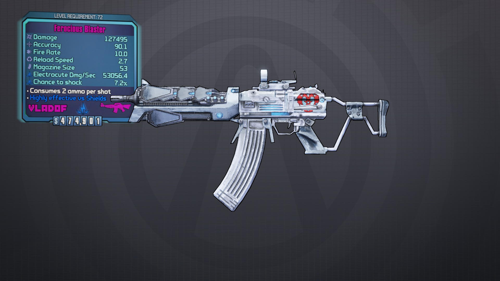
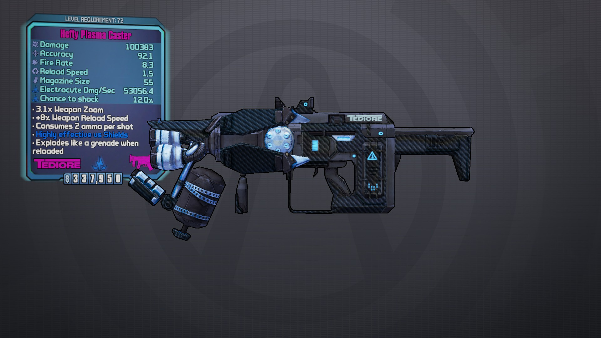
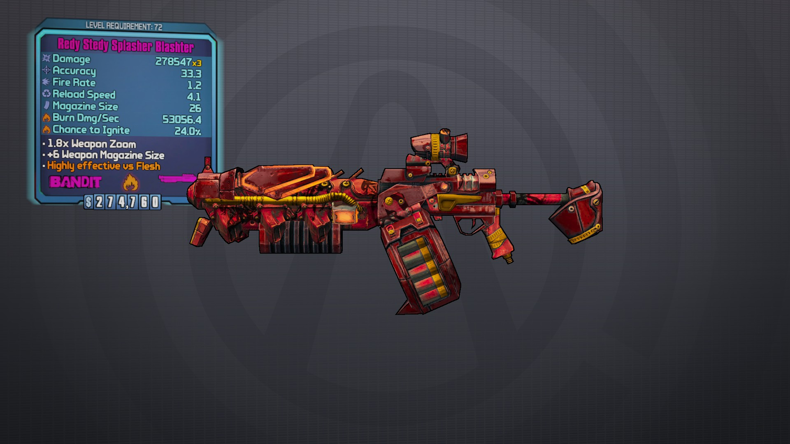

Dahl Blaster

Attack Blaster (Damage)
BL2(hwAAAABmhgCBZgQ/BIFEamIQxDCNIQHDIYb//xUY/v9vYiDD0Izh) (Explosive)
BL2(hwAAAABSZwCBZgQ/BIFEamIQxDCNIQHDIQYHDBUY/v9vYiDD0Izh) (Fire)
BL2(hwAAAACwBQCBZgQ/BIFEamIQxDCNIQHDIQYIDBUY/v9vYiDD0Izh) (Shock)
BL2(hwAAAADsWwCBZgQ/BIFEamIQxDCNIQHDIYYHDBUY/v9vYiDD0Izh) (Corrosive)
BL2(hwAAAAAOOQCBZgQ/BIFEamIQxDCNIQHDIYYIDBUY/v9vYiDD0Izh) (Slag)
Feral Blaster (Fire Rate)
BL2(hwAAAAC2WgCBZgQ/BIFEamIQxDCNIQHDIYb//xYY/v9vYujC0Izh) (Explosive)
BL2(hwAAAACCuwCBZgQ/BIFEamIQxDCNIQHDIQYHDBYY/v9vYujC0Izh) (Fire)
BL2(hwAAAABg2QCBZgQ/BIFEamIQxDCNIQHDIQYIDBYY/v9vYujC0Izh) (Shock)
BL2(hwAAAAA8hwCBZgQ/BIFEamIQxDCNIQHDIYYHDBYY/v9vYujC0Izh) (Corrosive)
BL2(hwAAAADe5QCBZgQ/BIFEamIQxDCNIQHDIYYIDBYY/v9vYujC0Izh) (Slag)
Deep Blaster (Projectile Speed)
BL2(hwAAAAAKmgCBZgQ/BIFEamIQxDCNIQHDIYb//xcY/v9vYqDC0Izh) (Explosive)
BL2(hwAAAAA+ewCBZgQ/BIFEamIQxDCNIQHDIQYHDBcY/v9vYqDC0Izh) (Fire)
BL2(hwAAAADcGQCBZgQ/BIFEamIQxDCNIQHDIQYIDBcY/v9vYqDC0Izh) (Shock)
BL2(hwAAAACARwCBZgQ/BIFEamIQxDCNIQHDIYYHDBcY/v9vYqDC0Izh) (Corrosive)
BL2(hwAAAABiJQCBZgQ/BIFEamIQxDCNIQHDIYYIDBcY/v9vYqDC0Izh) (Slag)
Scout Blaster (Accuracy)
BL2(hwAAAAA7kACBZgQ/BIFEamIQxDCNIQHDIYb//xkY/v9vYjDC0Izh) (Explosive)
BL2(hwAAAAAPcQCBZgQ/BIFEamIQxDCNIQHDIQYHDBkY/v9vYjDC0Izh) (Fire)
BL2(hwAAAADtEwCBZgQ/BIFEamIQxDCNIQHDIQYIDBkY/v9vYjDC0Izh) (Shock)
BL2(hwAAAACxTQCBZgQ/BIFEamIQxDCNIQHDIYYHDBkY/v9vYjDC0Izh) (Corrosive)
BL2(hwAAAABTLwCBZgQ/BIFEamIQxDCNIQHDIYYIDBkY/v9vYjDC0Izh) (Slag)
Patrol Blaster (Stability)
BL2(hwAAAAAquACBZgQ/BIFEamIQxDCNIQHDIYb//xMY/v9vYlDD0Izh) (Explosive)
BL2(hwAAAAAeWQCBZgQ/BIFEamIQxDCNIQHDIQYHDBMY/v9vYlDD0Izh) (Fire)
BL2(hwAAAAD8OwCBZgQ/BIFEamIQxDCNIQHDIQYIDBMY/v9vYlDD0Izh) (Shock)
BL2(hwAAAACgZQCBZgQ/BIFEamIQxDCNIQHDIYYHDBMY/v9vYlDD0Izh) (Corrosive)
BL2(hwAAAABCBwCBZgQ/BIFEamIQxDCNIQHDIYYIDBMY/v9vYlDD0Izh) (Slag)
Onslaught Blaster (Mag Size)
BL2(hwAAAACGHQCBZgQ/BIFEamIQxDCNIQHDIYb//xgY/v9vYmjC0Izh) (Explosive)
BL2(hwAAAACy/ACBZgQ/BIFEamIQxDCNIQHDIQYHDBgY/v9vYmjC0Izh) (Fire)
BL2(hwAAAABQngCBZgQ/BIFEamIQxDCNIQHDIQYIDBgY/v9vYmjC0Izh) (Shock)
BL2(hwAAAAAMwACBZgQ/BIFEamIQxDCNIQHDIYYHDBgY/v9vYmjC0Izh) (Corrosive)
BL2(hwAAAADuogCBZgQ/BIFEamIQxDCNIQHDIYYIDBgY/v9vYmjC0Izh) (Slag)
Breach Blaster (Melee)
BL2(hwAAAAAPYgCBZgQ/BIFEamIQxDCNIQHDIYb//x0Y/v9vYsDC0Izh) (Explosive)
BL2(hwAAAAA7gwCBZgQ/BIFEamIQxDCNIQHDIQYHDB0Y/v9vYsDC0Izh) (Fire)
BL2(hwAAAADZ4QCBZgQ/BIFEamIQxDCNIQHDIQYIDB0Y/v9vYsDC0Izh) (Shock)
BL2(hwAAAACFvwCBZgQ/BIFEamIQxDCNIQHDIYYHDB0Y/v9vYsDC0Izh) (Corrosive)
BL2(hwAAAABn3QCBZgQ/BIFEamIQxDCNIQHDIYYIDB0Y/v9vYsDC0Izh) (Slag)
Bandit BlASSter

Nassty BlASSter (Damage)
BL2(hwAAAABivQCAhgQ/AoFExmIYxECNAQGDIYb//xUY/v/LYhjDwIzh)
BL2(hwAAAADoYACAhgQ/AoFExmIYxECNAQGDIYYHDBUY/v/LYhjDwIzh) (Corrosive)
BL2(hwAAAABWXACAhgQ/AoFExmIYxECNAQGDIQYHDBUY/v/LYhjDwIzh) (Fire)
BL2(hwAAAAC0PgCAhgQ/AoFExmIYxECNAQGDIQYIDBUY/v/LYhjDwIzh) (Shock)
BL2(hwAAAAAKAgCAhgQ/AoFExmIYxECNAQGDIYYIDBUY/v/LYhjDwIzh) (Slag)
Wyld Asss BlASSter (Fire Rate)
BL2(hwAAAAA2iACAhgQ/AoFExmIIxECNAQGDIYb//xYY/v/LYuDCwIzh)
BL2(hwAAAAC8VQCAhgQ/AoFExmIIxECNAQGDIYYHDBYY/v/LYuDCwIzh) (Corrosive)
BL2(hwAAAAACaQCAhgQ/AoFExmIIxECNAQGDIQYHDBYY/v/LYuDCwIzh) (Fire)
BL2(hwAAAADgCwCAhgQ/AoFExmIIxECNAQGDIQYIDBYY/v/LYuDCwIzh) (Shock)
BL2(hwAAAABeNwCAhgQ/AoFExmIIxECNAQGDIYYIDBYY/v/LYuDCwIzh) (Slag)
Nifed BlASSter (Melee)
BL2(hwAAAAAfkACAhgQ/AoFExmIIxECNAQGDIYb//xQY/v/LYkjBwIzh)
BL2(hwAAAACVTQCAhgQ/AoFExmIIxECNAQGDIYYHDBQY/v/LYkjBwIzh) (Corrosive)
BL2(hwAAAAArcQCAhgQ/AoFExmIIxECNAQGDIQYHDBQY/v/LYkjBwIzh) (Fire)
BL2(hwAAAADJEwCAhgQ/AoFExmIIxECNAQGDIQYIDBQY/v/LYkjBwIzh) (Shock)
BL2(hwAAAAB3LwCAhgQ/AoFExmIIxECNAQGDIYYIDBQY/v/LYkjBwIzh) (Slag)
Fast Bulets BlASSter (Bullet Speed)
BL2(hwAAAACJnwCAhgQ/AoFExmIIxECNAQGDIYb//xcY/v/LYpjCwIzh)
BL2(hwAAAAADQgCAhgQ/AoFExmIIxECNAQGDIYYHDBcY/v/LYpjCwIzh) (Corrosive)
BL2(hwAAAAC9fgCAhgQ/AoFExmIIxECNAQGDIQYHDBcY/v/LYpjCwIzh) (Fire)
BL2(hwAAAABfHACAhgQ/AoFExmIIxECNAQGDIQYIDBcY/v/LYpjCwIzh) (Shock)
BL2(hwAAAADhIACAhgQ/AoFExmIIxECNAQGDIYYIDBcY/v/LYpjCwIzh) (Slag)
Taktikal BlASSter (Stability)
BL2(hwAAAACrJwCAhgQ/AoFExmIIxECNAQGDIYb//xMY/v/LYkjDwIzh)
BL2(hwAAAAAh+gCAhgQ/AoFExmIIxECNAQGDIYYHDBMY/v/LYkjDwIzh) (Corrosive)
BL2(hwAAAACfxgCAhgQ/AoFExmIIxECNAQGDIQYHDBMY/v/LYkjDwIzh) (Fire)
BL2(hwAAAAB9pACAhgQ/AoFExmIIxECNAQGDIQYIDBMY/v/LYkjDwIzh) (Shock)
BL2(hwAAAADDmACAhgQ/AoFExmIIxECNAQGDIYYIDBMY/v/LYkjDwIzh) (Slag)
Expandifide BlASSter (Mag Size)
BL2(hwAAAAAGzwCAhgQ/AoFExmIIxECNAQGDIYb//xgY/v/LYmDCwIzh)
BL2(hwAAAACMEgCAhgQ/AoFExmIIxECNAQGDIYYHDBgY/v/LYmDCwIzh) (Corrosive)
BL2(hwAAAAAyLgCAhgQ/AoFExmIIxECNAQGDIQYHDBgY/v/LYmDCwIzh) (Fire)
BL2(hwAAAADQTACAhgQ/AoFExmIIxECNAQGDIQYIDBgY/v/LYmDCwIzh) (Shock)
BL2(hwAAAABucACAhgQ/AoFExmIIxECNAQGDIYYIDBgY/v/LYmDCwIzh) (Slag)
Akurate BlASSter (Accuracy)
BL2(hwAAAAC6DwCAhgQ/AoFExmIIxECNAQGDIYb//xkY/v/LYijCwIzh)
BL2(hwAAAAAw0gCAhgQ/AoFExmIIxECNAQGDIYYHDBkY/v/LYijCwIzh) (Corrosive)
BL2(hwAAAACO7gCAhgQ/AoFExmIIxECNAQGDIQYHDBkY/v/LYijCwIzh) (Fire)
BL2(hwAAAABsjACAhgQ/AoFExmIIxECNAQGDIQYIDBkY/v/LYijCwIzh) (Shock)
BL2(hwAAAADSsACAhgQ/AoFExmIIxECNAQGDIYYIDBkY/v/LYijCwIzh) (Slag)
Vladof Blaster

Ferocious Blaster (Damage)
BL2(hwAAAAAehwCERgQ/CoFE3mIYxECNQQGDIob//xUY/v/jYjjD0Izh)
BL2(hwAAAACUWgCERgQ/CoFE3mIYxECNQQGDIoYHDBUY/v/jYjjD0Izh) (Corrosive)
BL2(hwAAAAAqZgCERgQ/CoFE3mIYxECNQQGDIgYHDBUY/v/jYjjD0Izh) (Fire)
BL2(hwAAAADIBACERgQ/CoFE3mIYxECNQQGDIgYIDBUY/v/jYjjD0Izh) (Shock)
BL2(hwAAAAB2OACERgQ/CoFE3mIYxECNQQGDIoYIDBUY/v/jYjjD0Izh) (Slag)
Rabid Blaster (Fire Rate)
BL2(hwAAAABfQwCERgQ/CoFE3mIoxECNQQGDIob//xYY/v/jYgDD0Izh)
BL2(hwAAAADVngCERgQ/CoFE3mIoxECNQQGDIoYHDBYY/v/jYgDD0Izh) (Corrosive)
BL2(hwAAAABrogCERgQ/CoFE3mIoxECNQQGDIgYHDBYY/v/jYgDD0Izh) (Fire)
BL2(hwAAAACJwACERgQ/CoFE3mIoxECNQQGDIgYIDBYY/v/jYgDD0Izh) (Shock)
BL2(hwAAAAA3/ACERgQ/CoFE3mIoxECNQQGDIoYIDBYY/v/jYgDD0Izh) (Slag)
Skewering Blaster (Melee)
BL2(hwAAAACQHgCERgQ/CoFE3mIoxECNQQGDIob//x0Y/v/jYtDC0Izh)
BL2(hwAAAAAawwCERgQ/CoFE3mIoxECNQQGDIoYHDB0Y/v/jYtDC0Izh) (Corrosive)
BL2(hwAAAACk/wCERgQ/CoFE3mIoxECNQQGDIgYHDB0Y/v/jYtDC0Izh) (Fire)
BL2(hwAAAABGnQCERgQ/CoFE3mIoxECNQQGDIgYIDB0Y/v/jYtDC0Izh) (Shock)
BL2(hwAAAAD4oQCERgQ/CoFE3mIoxECNQQGDIoYIDB0Y/v/jYtDC0Izh) (Slag)
Swift Blaster (Bullet Speed)
BL2(hwAAAAD72ACERgQ/CoFE3mIoxECNQQGDIob//xcY/v/jYrjC0Izh)
BL2(hwAAAABxBQCERgQ/CoFE3mIoxECNQQGDIoYHDBcY/v/jYrjC0Izh) (Corrosive)
BL2(hwAAAADPOQCERgQ/CoFE3mIoxECNQQGDIgYHDBcY/v/jYrjC0Izh) (Fire)
BL2(hwAAAAAtWwCERgQ/CoFE3mIoxECNQQGDIgYIDBcY/v/jYrjC0Izh) (Shock)
BL2(hwAAAACTZwCERgQ/CoFE3mIoxECNQQGDIoYIDBcY/v/jYrjC0Izh) (Slag)
Resolute Blaster (Stability)
BL2(hwAAAADZYACERgQ/CoFE3mIoxECNQQGDIob//xMY/v/jYmjD0Izh)
BL2(hwAAAABTvQCERgQ/CoFE3mIoxECNQQGDIoYHDBMY/v/jYmjD0Izh) (Corrosive)
BL2(hwAAAADtgQCERgQ/CoFE3mIoxECNQQGDIgYHDBMY/v/jYmjD0Izh) (Fire)
BL2(hwAAAAAP4wCERgQ/CoFE3mIoxECNQQGDIgYIDBMY/v/jYmjD0Izh) (Shock)
BL2(hwAAAACx3wCERgQ/CoFE3mIoxECNQQGDIoYIDBMY/v/jYmjD0Izh) (Slag)
Expansive Blaster (Mag Size)
BL2(hwAAAAB71ACERgQ/CoFE3mIoxECNQQGDIob//xgY/v/jYoDC0Izh)
BL2(hwAAAADxCQCERgQ/CoFE3mIoxECNQQGDIoYHDBgY/v/jYoDC0Izh) (Corrosive)
BL2(hwAAAABPNQCERgQ/CoFE3mIoxECNQQGDIgYHDBgY/v/jYoDC0Izh) (Fire)
BL2(hwAAAACtVwCERgQ/CoFE3mIoxECNQQGDIgYIDBgY/v/jYoDC0Izh) (Shock)
BL2(hwAAAAATawCERgQ/CoFE3mIoxECNQQGDIoYIDBgY/v/jYoDC0Izh) (Slag)
Severe Blaster (Accuracy)
BL2(hwAAAADNfACERgQ/CoFE3mIoxECNQQGDIob//xkY/v/jYkjC0Izh)
BL2(hwAAAABHoQCERgQ/CoFE3mIoxECNQQGDIoYHDBkY/v/jYkjC0Izh) (Corrosive)
BL2(hwAAAAD5nQCERgQ/CoFE3mIoxECNQQGDIgYHDBkY/v/jYkjC0Izh) (Fire)
BL2(hwAAAAAb/wCERgQ/CoFE3mIoxECNQQGDIgYIDBkY/v/jYkjC0Izh) (Shock)
BL2(hwAAAAClwwCERgQ/CoFE3mIoxECNQQGDIoYIDBkY/v/jYkjC0Izh) (Slag)
Bandit Dart

Homering Dart (Melee)
BL2(hwAAAABNngCApwdAAoFEisNYhaEOQwHG/////yEw/v+Pw4CI4RDj)
BL2(hwAAAAC4EACApwdAAoFEisNYhaEOQwHG//8KGCEw/v+Pw4CI4RDj) (Corrosive)
BL2(hwAAAADhqgCApwdAAoFEisNYhaEOQwHG//8JGCEw/v+Pw4CI4RDj) (Fire)
BL2(hwAAAAAGLACApwdAAoFEisNYhaEOQwHG/38KGCEw/v+Pw4CI4RDj) (Shock)
BL2(hwAAAAB6VQCApwdAAoFEisNYhaEOQwHG/38LGCEw/v+Pw4CI4RDj) (Slag)
Homering Dart (Accuracy)
BL2(hwAAAAAfQQCApwdAAoFEisNYhaEOQwHG/////xkw/v+Pw4CI4RDj)
BL2(hwAAAADqzwCApwdAAoFEisNYhaEOQwHG//8KGBkw/v+Pw4CI4RDj) (Corrosive)
BL2(hwAAAACzdQCApwdAAoFEisNYhaEOQwHG//8JGBkw/v+Pw4CI4RDj) (Fire)
BL2(hwAAAABU8wCApwdAAoFEisNYhaEOQwHG/38KGBkw/v+Pw4CI4RDj) (Shock)
BL2(hwAAAAAoigCApwdAAoFEisNYhaEOQwHG/38LGBkw/v+Pw4CI4RDj) (Slag)
Homering Dart (X2 Projectiles)
BL2(hwAAAAC6LwCApwdAAoFEisNYhaEOQwHG/////xow/v+Pw4CI4RDj)
BL2(hwAAAABPoQCApwdAAoFEisNYhaEOQwHG//8KGBow/v+Pw4CI4RDj) (Corrosive)
BL2(hwAAAAAWGwCApwdAAoFEisNYhaEOQwHG//8JGBow/v+Pw4CI4RDj) (Fire)
BL2(hwAAAADxnQCApwdAAoFEisNYhaEOQwHG/38KGBow/v+Pw4CI4RDj) (Shock)
BL2(hwAAAACN5ACApwdAAoFEisNYhaEOQwHG/38LGBow/v+Pw4CI4RDj) (Slag)
Homering Dart (Stability)
BL2(hwAAAABt5QCApwdAAoFEisNYhaEOQwHG/////xsw/v+Pw4CI4RDj)
BL2(hwAAAACYawCApwdAAoFEisNYhaEOQwHG//8KGBsw/v+Pw4CI4RDj) (Corrosive)
BL2(hwAAAADB0QCApwdAAoFEisNYhaEOQwHG//8JGBsw/v+Pw4CI4RDj) (Fire)
BL2(hwAAAAAmVwCApwdAAoFEisNYhaEOQwHG/38KGBsw/v+Pw4CI4RDj) (Shock)
BL2(hwAAAABaLgCApwdAAoFEisNYhaEOQwHG/38LGBsw/v+Pw4CI4RDj) (Slag)
Homering Dart (Mag Size)
BL2(hwAAAADw8gCApwdAAoFEisNYhaEOQwHG/////xww/v+Pw4CI4RDj)
BL2(hwAAAAAFfACApwdAAoFEisNYhaEOQwHG//8KGBww/v+Pw4CI4RDj) (Corrosive)
BL2(hwAAAABcxgCApwdAAoFEisNYhaEOQwHG//8JGBww/v+Pw4CI4RDj) (Fire)
BL2(hwAAAAC7QACApwdAAoFEisNYhaEOQwHG/38KGBww/v+Pw4CI4RDj) (Shock)
BL2(hwAAAADHOQCApwdAAoFEisNYhaEOQwHG/38LGBww/v+Pw4CI4RDj) (Slag)
Homering Dart (Damage)
BL2(hwAAAACFCACApwdAAoFEisOIhaEOQwHG/////x0w/v+Pw4CI4RDj)
BL2(hwAAAABwhgCApwdAAoFEisOIhaEOQwHG//8KGB0w/v+Pw4CI4RDj) (Corrosive)
BL2(hwAAAAApPACApwdAAoFEisOIhaEOQwHG//8JGB0w/v+Pw4CI4RDj) (Fire)
BL2(hwAAAADOugCApwdAAoFEisOIhaEOQwHG/38KGB0w/v+Pw4CI4RDj) (Shock)
BL2(hwAAAACywwCApwdAAoFEisOIhaEOQwHG/38LGB0w/v+Pw4CI4RDj) (Slag)
Homering Dart (Fire Rate)
BL2(hwAAAACCVgCApwdAAoFEisNYhaEOQwHG/////x4w/v+Pw4CI4RDj)
BL2(hwAAAAB32ACApwdAAoFEisNYhaEOQwHG//8KGB4w/v+Pw4CI4RDj) (Corrosive)
BL2(hwAAAAAuYgCApwdAAoFEisNYhaEOQwHG//8JGB4w/v+Pw4CI4RDj) (Fire)
BL2(hwAAAADJ5ACApwdAAoFEisNYhaEOQwHG/38KGB4w/v+Pw4CI4RDj) (Shock)
BL2(hwAAAAC1nQCApwdAAoFEisNYhaEOQwHG/38LGB4w/v+Pw4CI4RDj) (Slag)
Bandit Spiker

Murduerer's Spiker (Damage)
BL2(hwAAAABdGwCApwdAAoFEisOIhZEOQwHG/////x0w/v+Pw+iC0RDj)
BL2(hwAAAAColQCApwdAAoFEisOIhZEOQwHG//8KGB0w/v+Pw+iC0RDj) (Corrosive)
BL2(hwAAAADxLwCApwdAAoFEisOIhZEOQwHG//8JGB0w/v+Pw+iC0RDj) (Fire)
BL2(hwAAAAAWqQCApwdAAoFEisOIhZEOQwHG/38KGB0w/v+Pw+iC0RDj) (Shock)
BL2(hwAAAABq0ACApwdAAoFEisOIhZEOQwHG/38LGB0w/v+Pw+iC0RDj) (Slag)
Rapider Spiker (Fire Rate)
BL2(hwAAAAAuugCApwdAAoFEisNYhZEOQwHG/////x4w/v+PwzCD0RDj)
BL2(hwAAAADbNACApwdAAoFEisNYhZEOQwHG//8KGB4w/v+PwzCD0RDj) (Corrosive)
BL2(hwAAAACCjgCApwdAAoFEisNYhZEOQwHG//8JGB4w/v+PwzCD0RDj) (Fire)
BL2(hwAAAABlCACApwdAAoFEisNYhZEOQwHG/38KGB4w/v+PwzCD0RDj) (Shock)
BL2(hwAAAAAZcQCApwdAAoFEisNYhZEOQwHG/38LGB4w/v+PwzCD0RDj) (Slag)
Bayaneted Spiker (Melee)
BL2(hwAAAADCugCApwdAAoFEisNYhZEOQwHG/////yEw/v+Pw7CB0RDj)
BL2(hwAAAAA3NACApwdAAoFEisNYhZEOQwHG//8KGCEw/v+Pw7CB0RDj) (Corrosive)
BL2(hwAAAABujgCApwdAAoFEisNYhZEOQwHG//8JGCEw/v+Pw7CB0RDj) (Fire)
BL2(hwAAAACJCACApwdAAoFEisNYhZEOQwHG/38KGCEw/v+Pw7CB0RDj) (Shock)
BL2(hwAAAAD1cQCApwdAAoFEisNYhZEOQwHG/38LGCEw/v+Pw7CB0RDj) (Slag)
Misles Spiker (Accuracy)
BL2(hwAAAAD4uACApwdAAoFEisNYhZEOQwHG/////xkw/v+Pw8iB0RDj)
BL2(hwAAAAANNgCApwdAAoFEisNYhZEOQwHG//8KGBkw/v+Pw8iB0RDj) (Corrosive)
BL2(hwAAAABUjACApwdAAoFEisNYhZEOQwHG//8JGBkw/v+Pw8iB0RDj) (Fire)
BL2(hwAAAACzCgCApwdAAoFEisNYhZEOQwHG/38KGBkw/v+Pw8iB0RDj) (Shock)
BL2(hwAAAADPcwCApwdAAoFEisNYhZEOQwHG/38LGBkw/v+Pw8iB0RDj) (Slag)
Dubble Spiker (X2 Projectiles)
BL2(hwAAAAAAiQCApwdAAoFEisNYhZEOQwHG/////xow/v+PwxCC0RDj)
BL2(hwAAAAD1BwCApwdAAoFEisNYhZEOQwHG//8KGBow/v+PwxCC0RDj) (Corrosive)
BL2(hwAAAACsvQCApwdAAoFEisNYhZEOQwHG//8JGBow/v+PwxCC0RDj) (Fire)
BL2(hwAAAABLOwCApwdAAoFEisNYhZEOQwHG/38KGBow/v+PwxCC0RDj) (Shock)
BL2(hwAAAAA3QgCApwdAAoFEisNYhZEOQwHG/38LGBow/v+PwxCC0RDj) (Slag)
Marxmans Spiker (Stability)
BL2(hwAAAAC8SQCApwdAAoFEisNYhZEOQwHG/////xsw/v+Pw1iC0RDj)
BL2(hwAAAABJxwCApwdAAoFEisNYhZEOQwHG//8KGBsw/v+Pw1iC0RDj) (Corrosive)
BL2(hwAAAAAQfQCApwdAAoFEisNYhZEOQwHG//8JGBsw/v+Pw1iC0RDj) (Fire)
BL2(hwAAAAD3+wCApwdAAoFEisNYhZEOQwHG/38KGBsw/v+Pw1iC0RDj) (Shock)
BL2(hwAAAACLggCApwdAAoFEisNYhZEOQwHG/38LGBsw/v+Pw1iC0RDj) (Slag)
Extendified Spiker (Mag Size)
BL2(hwAAAABD6wCApwdAAoFEisNYhZEOQwHG/////xww/v+Pw6CC0RDj)
BL2(hwAAAAC2ZQCApwdAAoFEisNYhZEOQwHG//8KGBww/v+Pw6CC0RDj) (Corrosive)
BL2(hwAAAADv3wCApwdAAoFEisNYhZEOQwHG//8JGBww/v+Pw6CC0RDj) (Fire)
BL2(hwAAAAAIWQCApwdAAoFEisNYhZEOQwHG/38KGBww/v+Pw6CC0RDj) (Shock)
BL2(hwAAAAB0IACApwdAAoFEisNYhZEOQwHG/38LGBww/v+Pw6CC0RDj) (Slag)
Dahl Dart

Neutralizing Dart (Damage)
BL2(hwAAAAC0jQCBhwdABIFEmsOIhaEOowHG/////x0w/v+fw/CC4RDj)
BL2(hwAAAABBAwCBhwdABIFEmsOIhaEOowHG//8KGB0w/v+fw/CC4RDj) (Corrosive)
BL2(hwAAAAAYuQCBhwdABIFEmsOIhaEOowHG//8JGB0w/v+fw/CC4RDj) (Fire)
BL2(hwAAAAD/PwCBhwdABIFEmsOIhaEOowHG/38KGB0w/v+fw/CC4RDj) (Shock)
BL2(hwAAAACDRgCBhwdABIFEmsOIhaEOowHG/38LGB0w/v+fw/CC4RDj) (Slag)
React Dart (Fire Rate)
BL2(hwAAAACLgwCBhwdABIFEmsNwhaEOowHG/////x4w/v+fwziD4RDj)
BL2(hwAAAAB+DQCBhwdABIFEmsNwhaEOowHG//8KGB4w/v+fwziD4RDj) (Corrosive)
BL2(hwAAAAAntwCBhwdABIFEmsNwhaEOowHG//8JGB4w/v+fwziD4RDj) (Fire)
BL2(hwAAAADAMQCBhwdABIFEmsNwhaEOowHG/38KGB4w/v+fwziD4RDj) (Shock)
BL2(hwAAAAC8SACBhwdABIFEmsNwhaEOowHG/38LGB4w/v+fwziD4RDj) (Slag)
Floated Dart (Accuracy)
BL2(hwAAAABczACBhwdABIFEmsNwhaEOowHG/////xkw/v+fw9CB4RDj)
BL2(hwAAAACpQgCBhwdABIFEmsNwhaEOowHG//8KGBkw/v+fw9CB4RDj) (Corrosive)
BL2(hwAAAADw+ACBhwdABIFEmsNwhaEOowHG//8JGBkw/v+fw9CB4RDj) (Fire)
BL2(hwAAAAAXfgCBhwdABIFEmsNwhaEOowHG/38KGBkw/v+fw9CB4RDj) (Shock)
BL2(hwAAAABrBwCBhwdABIFEmsNwhaEOowHG/38LGBkw/v+fw9CB4RDj) (Slag)
Twin Dart (X2 Projectiles)
BL2(hwAAAAClsACBhwdABIFEmsNwhaEOowHG/////xow/v+fwxiC4RDj)
BL2(hwAAAABQPgCBhwdABIFEmsNwhaEOowHG//8KGBow/v+fwxiC4RDj) (Corrosive)
BL2(hwAAAAAJhACBhwdABIFEmsNwhaEOowHG//8JGBow/v+fwxiC4RDj) (Fire)
BL2(hwAAAADuAgCBhwdABIFEmsNwhaEOowHG/38KGBow/v+fwxiC4RDj) (Shock)
BL2(hwAAAACSewCBhwdABIFEmsNwhaEOowHG/38LGBow/v+fwxiC4RDj) (Slag)
Tactical Dart (Stability)
BL2(hwAAAAAapwCBhwdABIFEmsNwhaEOowHG/////xsw/v+fw2CC4RDj)
BL2(hwAAAADvKQCBhwdABIFEmsNwhaEOowHG//8KGBsw/v+fw2CC4RDj) (Corrosive)
BL2(hwAAAAC2kwCBhwdABIFEmsNwhaEOowHG//8JGBsw/v+fw2CC4RDj) (Fire)
BL2(hwAAAABRFQCBhwdABIFEmsNwhaEOowHG/38KGBsw/v+fw2CC4RDj) (Shock)
BL2(hwAAAAAtbACBhwdABIFEmsNwhaEOowHG/38LGBsw/v+fw2CC4RDj) (Slag)
Close Quarters Dart (Melee)
BL2(hwAAAACPfwCBhwdABIFEmsNwhaEOowHG/////xgw/v+fw4CB4RDj)
BL2(hwAAAAB68QCBhwdABIFEmsNwhaEOowHG//8KGBgw/v+fw4CB4RDj) (Corrosive)
BL2(hwAAAAAjSwCBhwdABIFEmsNwhaEOowHG//8JGBgw/v+fw4CB4RDj) (Fire)
BL2(hwAAAADEzQCBhwdABIFEmsNwhaEOowHG/38KGBgw/v+fw4CB4RDj) (Shock)
BL2(hwAAAAC4tACBhwdABIFEmsNwhaEOowHG/38LGBgw/v+fw4CB4RDj) (Slag)
Loaded Dart (Mag Size)
BL2(hwAAAADm0gCBhwdABIFEmsNwhaEOowHG/////xww/v+fw6iC4RDj)
BL2(hwAAAAATXACBhwdABIFEmsNwhaEOowHG//8KGBww/v+fw6iC4RDj) (Corrosive)
BL2(hwAAAABK5gCBhwdABIFEmsNwhaEOowHG//8JGBww/v+fw6iC4RDj) (Fire)
BL2(hwAAAACtYACBhwdABIFEmsNwhaEOowHG/38KGBww/v+fw6iC4RDj) (Shock)
BL2(hwAAAADRGQCBhwdABIFEmsNwhaEOowHG/38LGBww/v+fw6iC4RDj) (Slag)
Dahl Spiker

Neutralizing Spiker (Damage)
BL2(hwAAAABXHwCBhwdABIFEmsOIhZEOowHG/////x0w/v+fw/CC0RDj)
BL2(hwAAAACikQCBhwdABIFEmsOIhZEOowHG//8KGB0w/v+fw/CC0RDj) (Corrosive)
BL2(hwAAAAD7KwCBhwdABIFEmsOIhZEOowHG//8JGB0w/v+fw/CC0RDj) (Fire)
BL2(hwAAAAAcrQCBhwdABIFEmsOIhZEOowHG/38KGB0w/v+fw/CC0RDj) (Shock)
BL2(hwAAAABg1ACBhwdABIFEmsOIhZEOowHG/38LGB0w/v+fw/CC0RDj) (Slag)
React Spiker (Fire Rate)
BL2(hwAAAABoEQCBhwdABIFEmsNwhZEOowHG/////x4w/v+fwziD0RDj)
BL2(hwAAAACdnwCBhwdABIFEmsNwhZEOowHG//8KGB4w/v+fwziD0RDj) (Corrosive)
BL2(hwAAAADEJQCBhwdABIFEmsNwhZEOowHG//8JGB4w/v+fwziD0RDj) (Fire)
BL2(hwAAAAAjowCBhwdABIFEmsNwhZEOowHG/38KGB4w/v+fwziD0RDj) (Shock)
BL2(hwAAAABf2gCBhwdABIFEmsNwhZEOowHG/38LGB4w/v+fwziD0RDj) (Slag)
Close Quarters Spiker (Melee)
BL2(hwAAAABs7QCBhwdABIFEmsNwhZEOowHG/////xgw/v+fw4CB0RDj)
BL2(hwAAAACZYwCBhwdABIFEmsNwhZEOowHG//8KGBgw/v+fw4CB0RDj) (Corrosive)
BL2(hwAAAADA2QCBhwdABIFEmsNwhZEOowHG//8JGBgw/v+fw4CB0RDj) (Fire)
BL2(hwAAAAAnXwCBhwdABIFEmsNwhZEOowHG/38KGBgw/v+fw4CB0RDj) (Shock)
BL2(hwAAAABbJgCBhwdABIFEmsNwhZEOowHG/38LGBgw/v+fw4CB0RDj) (Slag)
Floated Spiker (Accuracy)
BL2(hwAAAAC/XgCBhwdABIFEmsNwhZEOowHG/////xkw/v+fw9CB0RDj)
BL2(hwAAAABK0ACBhwdABIFEmsNwhZEOowHG//8KGBkw/v+fw9CB0RDj) (Corrosive)
BL2(hwAAAAATagCBhwdABIFEmsNwhZEOowHG//8JGBkw/v+fw9CB0RDj) (Fire)
BL2(hwAAAAD07ACBhwdABIFEmsNwhZEOowHG/38KGBkw/v+fw9CB0RDj) (Shock)
BL2(hwAAAACIlQCBhwdABIFEmsNwhZEOowHG/38LGBkw/v+fw9CB0RDj) (Slag)
Twin Spiker (X2 Projectiles)
BL2(hwAAAABGIgCBhwdABIFEmsNwhZEOowHG/////xow/v+fwxiC0RDj)
BL2(hwAAAACzrACBhwdABIFEmsNwhZEOowHG//8KGBow/v+fwxiC0RDj) (Corrosive)
BL2(hwAAAADqFgCBhwdABIFEmsNwhZEOowHG//8JGBow/v+fwxiC0RDj) (Fire)
BL2(hwAAAAANkACBhwdABIFEmsNwhZEOowHG/38KGBow/v+fwxiC0RDj) (Shock)
BL2(hwAAAABx6QCBhwdABIFEmsNwhZEOowHG/38LGBow/v+fwxiC0RDj) (Slag)
Tactical Spiker (Stability)
BL2(hwAAAAD5NQCBhwdABIFEmsNwhZEOowHG/////xsw/v+fw2CC0RDj)
BL2(hwAAAAAMuwCBhwdABIFEmsNwhZEOowHG//8KGBsw/v+fw2CC0RDj) (Corrosive)
BL2(hwAAAABVAQCBhwdABIFEmsNwhZEOowHG//8JGBsw/v+fw2CC0RDj) (Fire)
BL2(hwAAAACyhwCBhwdABIFEmsNwhZEOowHG/38KGBsw/v+fw2CC0RDj) (Shock)
BL2(hwAAAADO/gCBhwdABIFEmsNwhZEOowHG/38LGBsw/v+fw2CC0RDj) (Slag)
Loaded Spiker (Mag Size)
BL2(hwAAAAAFQACBhwdABIFEmsNwhZEOowHG/////xww/v+fw6iC0RDj)
BL2(hwAAAADwzgCBhwdABIFEmsNwhZEOowHG//8KGBww/v+fw6iC0RDj) (Corrosive)
BL2(hwAAAACpdACBhwdABIFEmsNwhZEOowHG//8JGBww/v+fw6iC0RDj) (Fire)
BL2(hwAAAABO8gCBhwdABIFEmsNwhZEOowHG/38KGBww/v+fw6iC0RDj) (Shock)
BL2(hwAAAAAyiwCBhwdABIFEmsNwhZEOowHG/38LGBww/v+fw6iC0RDj) (Slag)
Hyperion Dart

Win-Win Dart (Damage)
BL2(hwAAAAAg9QCCZwdADIFEosOIhaEOIwLG/////x0w/v+vw/iC4RDj)
BL2(hwAAAADVewCCZwdADIFEosOIhaEOIwLG//8KGB0w/v+vw/iC4RDj) (Corrosive)
BL2(hwAAAACMwQCCZwdADIFEosOIhaEOIwLG//8JGB0w/v+vw/iC4RDj) (Fire)
BL2(hwAAAABrRwCCZwdADIFEosOIhaEOIwLG/38KGB0w/v+vw/iC4RDj) (Shock)
BL2(hwAAAAAXPgCCZwdADIFEosOIhaEOIwLG/38LGB0w/v+vw/iC4RDj) (Slag)
Dynamic Dart (Fire Rate)
BL2(hwAAAAAyawCCZwdADIFEosOQhaEOIwLG/////x4w/v+vw0CD4RDj)
BL2(hwAAAADH5QCCZwdADIFEosOQhaEOIwLG//8KGB4w/v+vw0CD4RDj) (Corrosive)
BL2(hwAAAACeXwCCZwdADIFEosOQhaEOIwLG//8JGB4w/v+vw0CD4RDj) (Fire)
BL2(hwAAAAB52QCCZwdADIFEosOQhaEOIwLG/38KGB4w/v+vw0CD4RDj) (Shock)
BL2(hwAAAAAFoACCZwdADIFEosOQhaEOIwLG/38LGB4w/v+vw0CD4RDj) (Slag)
Action Dart (Melee)
BL2(hwAAAAAwdACCZwdADIFEosOQhaEOIwLG/////xgw/v+vw4iB4RDj)
BL2(hwAAAADF+gCCZwdADIFEosOQhaEOIwLG//8KGBgw/v+vw4iB4RDj) (Corrosive)
BL2(hwAAAACcQACCZwdADIFEosOQhaEOIwLG//8JGBgw/v+vw4iB4RDj) (Fire)
BL2(hwAAAAB7xgCCZwdADIFEosOQhaEOIwLG/38KGBgw/v+vw4iB4RDj) (Shock)
BL2(hwAAAAAHvwCCZwdADIFEosOQhaEOIwLG/38LGBgw/v+vw4iB4RDj) (Slag)
Earnest Dart (Accuracy)
BL2(hwAAAADjxwCCZwdADIFEosOQhaEOIwLG/////xkw/v+vw9iB4RDj)
BL2(hwAAAAAWSQCCZwdADIFEosOQhaEOIwLG//8KGBkw/v+vw9iB4RDj) (Corrosive)
BL2(hwAAAABP8wCCZwdADIFEosOQhaEOIwLG//8JGBkw/v+vw9iB4RDj) (Fire)
BL2(hwAAAACodQCCZwdADIFEosOQhaEOIwLG/38KGBkw/v+vw9iB4RDj) (Shock)
BL2(hwAAAADUDACCZwdADIFEosOQhaEOIwLG/38LGBkw/v+vw9iB4RDj) (Slag)
Redundant Dart (X2 Projectiles)
BL2(hwAAAAAZbACCZwdADIFEosOQhaEOIwLG/////xow/v+vwyCC4RDj)
BL2(hwAAAADs4gCCZwdADIFEosOQhaEOIwLG//8KGBow/v+vwyCC4RDj) (Corrosive)
BL2(hwAAAAC1WACCZwdADIFEosOQhaEOIwLG//8JGBow/v+vwyCC4RDj) (Fire)
BL2(hwAAAABS3gCCZwdADIFEosOQhaEOIwLG/38KGBow/v+vwyCC4RDj) (Shock)
BL2(hwAAAAAupwCCZwdADIFEosOQhaEOIwLG/38LGBow/v+vwyCC4RDj) (Slag)
Core Dart (Stability)
BL2(hwAAAAClrACCZwdADIFEosOQhaEOIwLG/////xsw/v+vw2iC4RDj)
BL2(hwAAAABQIgCCZwdADIFEosOQhaEOIwLG//8KGBsw/v+vw2iC4RDj) (Corrosive)
BL2(hwAAAAAJmACCZwdADIFEosOQhaEOIwLG//8JGBsw/v+vw2iC4RDj) (Fire)
BL2(hwAAAADuHgCCZwdADIFEosOQhaEOIwLG/38KGBsw/v+vw2iC4RDj) (Shock)
BL2(hwAAAACSZwCCZwdADIFEosOQhaEOIwLG/38LGBsw/v+vw2iC4RDj) (Slag)
Maximized Dart (Mag Size)
BL2(hwAAAABYlACCZwdADIFEosOQhaEOIwLG/////xww/v+vw7CC4RDj)
BL2(hwAAAACtGgCCZwdADIFEosOQhaEOIwLG//8KGBww/v+vw7CC4RDj) (Corrosive)
BL2(hwAAAAD0oACCZwdADIFEosOQhaEOIwLG//8JGBww/v+vw7CC4RDj) (Fire)
BL2(hwAAAAATJgCCZwdADIFEosOQhaEOIwLG/38KGBww/v+vw7CC4RDj) (Shock)
BL2(hwAAAABvXwCCZwdADIFEosOQhaEOIwLG/38LGBww/v+vw7CC4RDj) (Slag)
Hyperion Spiker

Win-Win Spiker (Damage)
BL2(hwAAAADDZwCCZwdADIFEosOIhZEOIwLG/////x0w/v+vw/iC0RDj)
BL2(hwAAAAA26QCCZwdADIFEosOIhZEOIwLG//8KGB0w/v+vw/iC0RDj) (Corrosive)
BL2(hwAAAABvUwCCZwdADIFEosOIhZEOIwLG//8JGB0w/v+vw/iC0RDj) (Fire)
BL2(hwAAAACI1QCCZwdADIFEosOIhZEOIwLG/38KGB0w/v+vw/iC0RDj) (Shock)
BL2(hwAAAAD0rACCZwdADIFEosOIhZEOIwLG/38LGB0w/v+vw/iC0RDj) (Slag)
Dynamic Spiker (Fire Rate)
BL2(hwAAAADR+QCCZwdADIFEosOQhZEOIwLG/////x4w/v+vw0CD0RDj)
BL2(hwAAAAAkdwCCZwdADIFEosOQhZEOIwLG//8KGB4w/v+vw0CD0RDj) (Corrosive)
BL2(hwAAAAB9zQCCZwdADIFEosOQhZEOIwLG//8JGB4w/v+vw0CD0RDj) (Fire)
BL2(hwAAAACaSwCCZwdADIFEosOQhZEOIwLG/38KGB4w/v+vw0CD0RDj) (Shock)
BL2(hwAAAADmMgCCZwdADIFEosOQhZEOIwLG/38LGB4w/v+vw0CD0RDj) (Slag)
Action Spiker (Melee)
BL2(hwAAAADT5gCCZwdADIFEosOQhZEOIwLG/////xgw/v+vw4iB0RDj)
BL2(hwAAAAAmaACCZwdADIFEosOQhZEOIwLG//8KGBgw/v+vw4iB0RDj) (Corrosive)
BL2(hwAAAAB/0gCCZwdADIFEosOQhZEOIwLG//8JGBgw/v+vw4iB0RDj) (Fire)
BL2(hwAAAACYVACCZwdADIFEosOQhZEOIwLG/38KGBgw/v+vw4iB0RDj) (Shock)
BL2(hwAAAADkLQCCZwdADIFEosOQhZEOIwLG/38LGBgw/v+vw4iB0RDj) (Slag)
Earnest Spiker (Accuracy)
BL2(hwAAAAAAVQCCZwdADIFEosOQhZEOIwLG/////xkw/v+vw9iB0RDj)
BL2(hwAAAAD12wCCZwdADIFEosOQhZEOIwLG//8KGBkw/v+vw9iB0RDj) (Corrosive)
BL2(hwAAAACsYQCCZwdADIFEosOQhZEOIwLG//8JGBkw/v+vw9iB0RDj) (Fire)
BL2(hwAAAABL5wCCZwdADIFEosOQhZEOIwLG/38KGBkw/v+vw9iB0RDj) (Shock)
BL2(hwAAAAA3ngCCZwdADIFEosOQhZEOIwLG/38LGBkw/v+vw9iB0RDj) (Slag)
Redundant Spiker (X2 Projectiles)
BL2(hwAAAAD6/gCCZwdADIFEosOQhZEOIwLG/////xow/v+vwyCC0RDj)
BL2(hwAAAAAPcACCZwdADIFEosOQhZEOIwLG//8KGBow/v+vwyCC0RDj) (Corrosive)
BL2(hwAAAABWygCCZwdADIFEosOQhZEOIwLG//8JGBow/v+vwyCC0RDj) (Fire)
BL2(hwAAAACxTACCZwdADIFEosOQhZEOIwLG/38KGBow/v+vwyCC0RDj) (Shock)
BL2(hwAAAADNNQCCZwdADIFEosOQhZEOIwLG/38LGBow/v+vwyCC0RDj) (Slag)
Core Spiker (Stability)
BL2(hwAAAABGPgCCZwdADIFEosOQhZEOIwLG/////xsw/v+vw2iC0RDj)
BL2(hwAAAACzsACCZwdADIFEosOQhZEOIwLG//8KGBsw/v+vw2iC0RDj) (Corrosive)
BL2(hwAAAADqCgCCZwdADIFEosOQhZEOIwLG//8JGBsw/v+vw2iC0RDj) (Fire)
BL2(hwAAAAANjACCZwdADIFEosOQhZEOIwLG/38KGBsw/v+vw2iC0RDj) (Shock)
BL2(hwAAAABx9QCCZwdADIFEosOQhZEOIwLG/38LGBsw/v+vw2iC0RDj) (Slag)
Maximized Spiker (Mag Size)
BL2(hwAAAAC7BgCCZwdADIFEosOQhZEOIwLG/////xww/v+vw7CC0RDj)
BL2(hwAAAABOiACCZwdADIFEosOQhZEOIwLG//8KGBww/v+vw7CC0RDj) (Corrosive)
BL2(hwAAAAAXMgCCZwdADIFEosOQhZEOIwLG//8JGBww/v+vw7CC0RDj) (Fire)
BL2(hwAAAADwtACCZwdADIFEosOQhZEOIwLG/38KGBww/v+vw7CC0RDj) (Shock)
BL2(hwAAAACMzQCCZwdADIFEosOQhZEOIwLG/38LGBww/v+vw7CC0RDj) (Slag)
Maliwan Dart

Potent Dart (Damage)
BL2(hwAAAADMWACGRwdAEIFEusOIhaEO4wHG/////x0w/v+/wwiD4RDj)
BL2(hwAAAAA51gCGRwdAEIFEusOIhaEO4wHG//8KGB0w/v+/wwiD4RDj) (Corrosive)
BL2(hwAAAABgbACGRwdAEIFEusOIhaEO4wHG//8JGB0w/v+/wwiD4RDj) (Fire)
BL2(hwAAAACH6gCGRwdAEIFEusOIhaEO4wHG/38KGB0w/v+/wwiD4RDj) (Shock)
BL2(hwAAAAD7kwCGRwdAEIFEusOIhaEO4wHG/38LGB0w/v+/wwiD4RDj) (Slag)
Expeditious Dart (Fire Rate)
BL2(hwAAAABA7gCGRwdAEIFEusOAhaEO4wHG/////x4w/v+/w1CD4RDj)
BL2(hwAAAAC1YACGRwdAEIFEusOAhaEO4wHG//8KGB4w/v+/w1CD4RDj) (Corrosive)
BL2(hwAAAADs2gCGRwdAEIFEusOAhaEO4wHG//8JGB4w/v+/w1CD4RDj) (Fire)
BL2(hwAAAAALXACGRwdAEIFEusOAhaEO4wHG/38KGB4w/v+/w1CD4RDj) (Shock)
BL2(hwAAAAB3JQCGRwdAEIFEusOAhaEO4wHG/38LGB4w/v+/w1CD4RDj) (Slag)
Evisceration Dart (Melee)
BL2(hwAAAABC8QCGRwdAEIFEusOAhaEO4wHG/////xgw/v+/w5iB4RDj)
BL2(hwAAAAC3fwCGRwdAEIFEusOAhaEO4wHG//8KGBgw/v+/w5iB4RDj) (Corrosive)
BL2(hwAAAADuxQCGRwdAEIFEusOAhaEO4wHG//8JGBgw/v+/w5iB4RDj) (Fire)
BL2(hwAAAAAJQwCGRwdAEIFEusOAhaEO4wHG/38KGBgw/v+/w5iB4RDj) (Shock)
BL2(hwAAAAB1OgCGRwdAEIFEusOAhaEO4wHG/38LGBgw/v+/w5iB4RDj) (Slag)
Punctilious Dart (Accuracy)
BL2(hwAAAACT2ACGRwdAEIFEusOAhaEO4wHG/////xkw/v+/w+iB4RDj)
BL2(hwAAAABmVgCGRwdAEIFEusOAhaEO4wHG//8KGBkw/v+/w+iB4RDj) (Corrosive)
BL2(hwAAAAA/7ACGRwdAEIFEusOAhaEO4wHG//8JGBkw/v+/w+iB4RDj) (Fire)
BL2(hwAAAADYagCGRwdAEIFEusOAhaEO4wHG/38KGBkw/v+/w+iB4RDj) (Shock)
BL2(hwAAAACkEwCGRwdAEIFEusOAhaEO4wHG/38LGBkw/v+/w+iB4RDj) (Slag)
Binary Dart (X2 Projectiles)
BL2(hwAAAABr6QCGRwdAEIFEusOAhaEO4wHG/////xow/v+/wzCC4RDj)
BL2(hwAAAACeZwCGRwdAEIFEusOAhaEO4wHG//8KGBow/v+/wzCC4RDj) (Corrosive)
BL2(hwAAAADH3QCGRwdAEIFEusOAhaEO4wHG//8JGBow/v+/wzCC4RDj) (Fire)
BL2(hwAAAAAgWwCGRwdAEIFEusOAhaEO4wHG/38KGBow/v+/wzCC4RDj) (Shock)
BL2(hwAAAABcIgCGRwdAEIFEusOAhaEO4wHG/38LGBow/v+/wzCC4RDj) (Slag)
Elegant Dart (Stability)
BL2(hwAAAADXKQCGRwdAEIFEusOAhaEO4wHG/////xsw/v+/w3iC4RDj)
BL2(hwAAAAAipwCGRwdAEIFEusOAhaEO4wHG//8KGBsw/v+/w3iC4RDj) (Corrosive)
BL2(hwAAAAB7HQCGRwdAEIFEusOAhaEO4wHG//8JGBsw/v+/w3iC4RDj) (Fire)
BL2(hwAAAACcmwCGRwdAEIFEusOAhaEO4wHG/38KGBsw/v+/w3iC4RDj) (Shock)
BL2(hwAAAADg4gCGRwdAEIFEusOAhaEO4wHG/38LGBsw/v+/w3iC4RDj) (Slag)
Surfeit Dart (Mag Size)
BL2(hwAAAAAtvwCGRwdAEIFEusOAhaEO4wHG/////xww/v+/w8CC4RDj)
BL2(hwAAAADYMQCGRwdAEIFEusOAhaEO4wHG//8KGBww/v+/w8CC4RDj) (Corrosive)
BL2(hwAAAACBiwCGRwdAEIFEusOAhaEO4wHG//8JGBww/v+/w8CC4RDj) (Fire)
BL2(hwAAAABmDQCGRwdAEIFEusOAhaEO4wHG/38KGBww/v+/w8CC4RDj) (Shock)
BL2(hwAAAAAadACGRwdAEIFEusOAhaEO4wHG/38LGBww/v+/w8CC4RDj) (Slag)
Maliwan Spiker

Potent Spiker (Damage)
BL2(hwAAAAAvygCGRwdAEIFEusOIhZEO4wHG/////x0w/v+/wwiD0RDj)
BL2(hwAAAADaRACGRwdAEIFEusOIhZEO4wHG//8KGB0w/v+/wwiD0RDj) (Corrosive)
BL2(hwAAAACD/gCGRwdAEIFEusOIhZEO4wHG//8JGB0w/v+/wwiD0RDj) (Fire)
BL2(hwAAAABkeACGRwdAEIFEusOIhZEO4wHG/38KGB0w/v+/wwiD0RDj) (Shock)
BL2(hwAAAAAYAQCGRwdAEIFEusOIhZEO4wHG/38LGB0w/v+/wwiD0RDj) (Slag)
Expeditious Spiker (Fire Rate)
BL2(hwAAAACjfACGRwdAEIFEusOAhZEO4wHG/////x4w/v+/w1CD0RDj)
BL2(hwAAAABW8gCGRwdAEIFEusOAhZEO4wHG//8KGB4w/v+/w1CD0RDj) (Corrosive)
BL2(hwAAAAAPSACGRwdAEIFEusOAhZEO4wHG//8JGB4w/v+/w1CD0RDj) (Fire)
BL2(hwAAAADozgCGRwdAEIFEusOAhZEO4wHG/38KGB4w/v+/w1CD0RDj) (Shock)
BL2(hwAAAACUtwCGRwdAEIFEusOAhZEO4wHG/38LGB4w/v+/w1CD0RDj) (Slag)
Evisceration Spiker (Melee)
BL2(hwAAAAChYwCGRwdAEIFEusOAhZEO4wHG/////xgw/v+/w5iB0RDj)
BL2(hwAAAABU7QCGRwdAEIFEusOAhZEO4wHG//8KGBgw/v+/w5iB0RDj) (Corrosive)
BL2(hwAAAAANVwCGRwdAEIFEusOAhZEO4wHG//8JGBgw/v+/w5iB0RDj) (Fire)
BL2(hwAAAADq0QCGRwdAEIFEusOAhZEO4wHG/38KGBgw/v+/w5iB0RDj) (Shock)
BL2(hwAAAACWqACGRwdAEIFEusOAhZEO4wHG/38LGBgw/v+/w5iB0RDj) (Slag)
Puntilious Spiker (Accuracy)
BL2(hwAAAABwSgCGRwdAEIFEusOAhZEO4wHG/////xkw/v+/w+iB0RDj)
BL2(hwAAAACFxACGRwdAEIFEusOAhZEO4wHG//8KGBkw/v+/w+iB0RDj) (Corrosive)
BL2(hwAAAADcfgCGRwdAEIFEusOAhZEO4wHG//8JGBkw/v+/w+iB0RDj) (Fire)
BL2(hwAAAAA7+ACGRwdAEIFEusOAhZEO4wHG/38KGBkw/v+/w+iB0RDj) (Shock)
BL2(hwAAAABHgQCGRwdAEIFEusOAhZEO4wHG/38LGBkw/v+/w+iB0RDj) (Slag)
Binary Spiker (X2 Projectiles)
BL2(hwAAAACIewCGRwdAEIFEusOAhZEO4wHG/////xow/v+/wzCC0RDj)
BL2(hwAAAAB99QCGRwdAEIFEusOAhZEO4wHG//8KGBow/v+/wzCC0RDj) (Corrosive)
BL2(hwAAAAAkTwCGRwdAEIFEusOAhZEO4wHG//8JGBow/v+/wzCC0RDj) (Fire)
BL2(hwAAAADDyQCGRwdAEIFEusOAhZEO4wHG/38KGBow/v+/wzCC0RDj) (Shock)
BL2(hwAAAAC/sACGRwdAEIFEusOAhZEO4wHG/38LGBow/v+/wzCC0RDj) (Slag)
Elegant Spiker (Stability)
BL2(hwAAAAA0uwCGRwdAEIFEusOAhZEO4wHG/////xsw/v+/w3iC0RDj)
BL2(hwAAAADBNQCGRwdAEIFEusOAhZEO4wHG//8KGBsw/v+/w3iC0RDj) (Corrosive)
BL2(hwAAAACYjwCGRwdAEIFEusOAhZEO4wHG//8JGBsw/v+/w3iC0RDj) (Fire)
BL2(hwAAAAB/CQCGRwdAEIFEusOAhZEO4wHG/38KGBsw/v+/w3iC0RDj) (Shock)
BL2(hwAAAAADcACGRwdAEIFEusOAhZEO4wHG/38LGBsw/v+/w3iC0RDj) (Slag)
Surfeit Spiker (Mag Size)
BL2(hwAAAADOLQCGRwdAEIFEusOAhZEO4wHG/////xww/v+/w8CC0RDj)
BL2(hwAAAAA7owCGRwdAEIFEusOAhZEO4wHG//8KGBww/v+/w8CC0RDj) (Corrosive)
BL2(hwAAAABiGQCGRwdAEIFEusOAhZEO4wHG//8JGBww/v+/w8CC0RDj) (Fire)
BL2(hwAAAACFnwCGRwdAEIFEusOAhZEO4wHG/38KGBww/v+/w8CC0RDj) (Shock)
BL2(hwAAAAD55gCGRwdAEIFEusOAhZEO4wHG/38LGBww/v+/w8CC0RDj) (Slag)
Tediore Dart

Super Dart (Damage)
BL2(hwAAAADqKACDJwdADoFEysOIhaEOYwHG/////x0w/v/PwxCD4RDj)
BL2(hwAAAAAfpgCDJwdADoFEysOIhaEOYwHG//8KGB0w/v/PwxCD4RDj) (Corrosive)
BL2(hwAAAABGHACDJwdADoFEysOIhaEOYwHG//8JGB0w/v/PwxCD4RDj) (Fire)
BL2(hwAAAAChmgCDJwdADoFEysOIhaEOYwHG/38KGB0w/v/PwxCD4RDj) (Shock)
BL2(hwAAAADd4wCDJwdADoFEysOIhaEOYwHG/38LGB0w/v/PwxCD4RDj) (Slag)
Peppy Dart (Fire Rate)
BL2(hwAAAABMoACDJwdADoFEysNghaEOYwHG/////x4w/v/Pw1iD4RDj)
BL2(hwAAAAC5LgCDJwdADoFEysNghaEOYwHG//8KGB4w/v/Pw1iD4RDj) (Corrosive)
BL2(hwAAAADglACDJwdADoFEysNghaEOYwHG//8JGB4w/v/Pw1iD4RDj) (Fire)
BL2(hwAAAAAHEgCDJwdADoFEysNghaEOYwHG/38KGB4w/v/Pw1iD4RDj) (Shock)
BL2(hwAAAAB7awCDJwdADoFEysNghaEOYwHG/38LGB4w/v/Pw1iD4RDj) (Slag)
Perma-Sharp Dart (Melee)
BL2(hwAAAABNaACDJwdADoFEysNghaEOYwHG/////xgw/v/Pw6CB4RDj)
BL2(hwAAAAC45gCDJwdADoFEysNghaEOYwHG//8KGBgw/v/Pw6CB4RDj) (Corrosive)
BL2(hwAAAADhXACDJwdADoFEysNghaEOYwHG//8JGBgw/v/Pw6CB4RDj) (Fire)
BL2(hwAAAAAG2gCDJwdADoFEysNghaEOYwHG/38KGBgw/v/Pw6CB4RDj) (Shock)
BL2(hwAAAAB6owCDJwdADoFEysNghaEOYwHG/38LGBgw/v/Pw6CB4RDj) (Slag)
Dependable Dart (Accuracy)
BL2(hwAAAACe2wCDJwdADoFEysNghaEOYwHG/////xkw/v/Pw/CB4RDj)
BL2(hwAAAABrVQCDJwdADoFEysNghaEOYwHG//8KGBkw/v/Pw/CB4RDj) (Corrosive)
BL2(hwAAAAAy7wCDJwdADoFEysNghaEOYwHG//8JGBkw/v/Pw/CB4RDj) (Fire)
BL2(hwAAAADVaQCDJwdADoFEysNghaEOYwHG/38KGBkw/v/Pw/CB4RDj) (Shock)
BL2(hwAAAACpEACDJwdADoFEysNghaEOYwHG/38LGBkw/v/Pw/CB4RDj) (Slag)
Two For One Dart (X2 Projectiles)
BL2(hwAAAABnpwCDJwdADoFEysNghaEOYwHG/////xow/v/PwziC4RDj)
BL2(hwAAAACSKQCDJwdADoFEysNghaEOYwHG//8KGBow/v/PwziC4RDj) (Corrosive)
BL2(hwAAAADLkwCDJwdADoFEysNghaEOYwHG//8JGBow/v/PwziC4RDj) (Fire)
BL2(hwAAAAAsFQCDJwdADoFEysNghaEOYwHG/38KGBow/v/PwziC4RDj) (Shock)
BL2(hwAAAABQbACDJwdADoFEysNghaEOYwHG/38LGBow/v/PwziC4RDj) (Slag)
Clean Dart (Stability)
BL2(hwAAAADX7ACDJwdADoFEysNghaEOYwHG/////xsw/v/Pw4CC4RDj)
BL2(hwAAAAAiYgCDJwdADoFEysNghaEOYwHG//8KGBsw/v/Pw4CC4RDj) (Corrosive)
BL2(hwAAAAB72ACDJwdADoFEysNghaEOYwHG//8JGBsw/v/Pw4CC4RDj) (Fire)
BL2(hwAAAACcXgCDJwdADoFEysNghaEOYwHG/38KGBsw/v/Pw4CC4RDj) (Shock)
BL2(hwAAAADgJwCDJwdADoFEysNghaEOYwHG/38LGBsw/v/Pw4CC4RDj) (Slag)
Jam Packed Dart (Mag Size)
BL2(hwAAAAAh8QCDJwdADoFEysNghaEOYwHG/////xww/v/Pw8iC4RDj)
BL2(hwAAAADUfwCDJwdADoFEysNghaEOYwHG//8KGBww/v/Pw8iC4RDj) (Corrosive)
BL2(hwAAAACNxQCDJwdADoFEysNghaEOYwHG//8JGBww/v/Pw8iC4RDj) (Fire)
BL2(hwAAAABqQwCDJwdADoFEysNghaEOYwHG/38KGBww/v/Pw8iC4RDj) (Shock)
BL2(hwAAAAAWOgCDJwdADoFEysNghaEOYwHG/38LGBww/v/Pw8iC4RDj) (Slag)
Tediore Spiker

Super Spiker (Damage)
BL2(hwAAAAAJugCDJwdADoFEysOIhZEOYwHG/////x0w/v/PwxCD0RDj)
BL2(hwAAAAD8NACDJwdADoFEysOIhZEOYwHG//8KGB0w/v/PwxCD0RDj) (Corrosive)
BL2(hwAAAACljgCDJwdADoFEysOIhZEOYwHG//8JGB0w/v/PwxCD0RDj) (Fire)
BL2(hwAAAABCCACDJwdADoFEysOIhZEOYwHG/38KGB0w/v/PwxCD0RDj) (Shock)
BL2(hwAAAAA+cQCDJwdADoFEysOIhZEOYwHG/38LGB0w/v/PwxCD0RDj) (Slag)
Peppy Spiker (Fire Rate)
BL2(hwAAAACvMgCDJwdADoFEysNghZEOYwHG/////x4w/v/Pw1iD0RDj)
BL2(hwAAAABavACDJwdADoFEysNghZEOYwHG//8KGB4w/v/Pw1iD0RDj) (Corrosive)
BL2(hwAAAAADBgCDJwdADoFEysNghZEOYwHG//8JGB4w/v/Pw1iD0RDj) (Fire)
BL2(hwAAAADkgACDJwdADoFEysNghZEOYwHG/38KGB4w/v/Pw1iD0RDj) (Shock)
BL2(hwAAAACY+QCDJwdADoFEysNghZEOYwHG/38LGB4w/v/Pw1iD0RDj) (Slag)
Perma-Sharp Spiker (Melee)
BL2(hwAAAACu+gCDJwdADoFEysNghZEOYwHG/////xgw/v/Pw6CB0RDj)
BL2(hwAAAABbdACDJwdADoFEysNghZEOYwHG//8KGBgw/v/Pw6CB0RDj) (Corrosive)
BL2(hwAAAAACzgCDJwdADoFEysNghZEOYwHG//8JGBgw/v/Pw6CB0RDj) (Fire)
BL2(hwAAAADlSACDJwdADoFEysNghZEOYwHG/38KGBgw/v/Pw6CB0RDj) (Shock)
BL2(hwAAAACZMQCDJwdADoFEysNghZEOYwHG/38LGBgw/v/Pw6CB0RDj) (Slag)
Dependable Spiker (Accuracy)
BL2(hwAAAAB9SQCDJwdADoFEysNghZEOYwHG/////xkw/v/Pw/CB0RDj)
BL2(hwAAAACIxwCDJwdADoFEysNghZEOYwHG//8KGBkw/v/Pw/CB0RDj) (Corrosive)
BL2(hwAAAADRfQCDJwdADoFEysNghZEOYwHG//8JGBkw/v/Pw/CB0RDj) (Fire)
BL2(hwAAAAA2+wCDJwdADoFEysNghZEOYwHG/38KGBkw/v/Pw/CB0RDj) (Shock)
BL2(hwAAAABKggCDJwdADoFEysNghZEOYwHG/38LGBkw/v/Pw/CB0RDj) (Slag)
Two for One Spiker (X2 Projectiles)
BL2(hwAAAACENQCDJwdADoFEysNghZEOYwHG/////xow/v/PwziC0RDj)
BL2(hwAAAABxuwCDJwdADoFEysNghZEOYwHG//8KGBow/v/PwziC0RDj) (Corrosive)
BL2(hwAAAAAoAQCDJwdADoFEysNghZEOYwHG//8JGBow/v/PwziC0RDj) (Fire)
BL2(hwAAAADPhwCDJwdADoFEysNghZEOYwHG/38KGBow/v/PwziC0RDj) (Shock)
BL2(hwAAAACz/gCDJwdADoFEysNghZEOYwHG/38LGBow/v/PwziC0RDj) (Slag)
Clean Spiker (Stability)
BL2(hwAAAAA0fgCDJwdADoFEysNghZEOYwHG/////xsw/v/Pw4CC0RDj)
BL2(hwAAAADB8ACDJwdADoFEysNghZEOYwHG//8KGBsw/v/Pw4CC0RDj) (Corrosive)
BL2(hwAAAACYSgCDJwdADoFEysNghZEOYwHG//8JGBsw/v/Pw4CC0RDj) (Fire)
BL2(hwAAAAB/zACDJwdADoFEysNghZEOYwHG/38KGBsw/v/Pw4CC0RDj) (Shock)
BL2(hwAAAAADtQCDJwdADoFEysNghZEOYwHG/38LGBsw/v/Pw4CC0RDj) (Slag)
Jam Packed Spiker (Mag Size)
BL2(hwAAAADCYwCDJwdADoFEysNghZEOYwHG/////xww/v/Pw8iC0RDj)
BL2(hwAAAAA37QCDJwdADoFEysNghZEOYwHG//8KGBww/v/Pw8iC0RDj) (Corrosive)
BL2(hwAAAABuVwCDJwdADoFEysNghZEOYwHG//8JGBww/v/Pw8iC0RDj) (Fire)
BL2(hwAAAACJ0QCDJwdADoFEysNghZEOYwHG/38KGBww/v/Pw8iC0RDj) (Shock)
BL2(hwAAAAD1qACDJwdADoFEysNghZEOYwHG/38LGBww/v/Pw8iC0RDj) (Slag)
Vladof Dart

Purging Dart (Damage)
BL2(hwAAAAB8kgCEBwdACoFE6sOIhaEOgwHG/////x0w/v/vwyCD4RDj)
BL2(hwAAAACJHACEBwdACoFE6sOIhaEOgwHG//8KGB0w/v/vwyCD4RDj) (Corrosive)
BL2(hwAAAADQpgCEBwdACoFE6sOIhaEOgwHG//8JGB0w/v/vwyCD4RDj) (Fire)
BL2(hwAAAAA3IACEBwdACoFE6sOIhaEOgwHG/38KGB0w/v/vwyCD4RDj) (Shock)
BL2(hwAAAABLWQCEBwdACoFE6sOIhaEOgwHG/38LGB0w/v/vwyCD4RDj) (Slag)
Vengeful Dart (Fire Rate)
BL2(hwAAAACZhQCEBwdACoFE6sNohaEOgwHG/////x4w/v/vw2iD4RDj)
BL2(hwAAAABsCwCEBwdACoFE6sNohaEOgwHG//8KGB4w/v/vw2iD4RDj) (Corrosive)
BL2(hwAAAAA1sQCEBwdACoFE6sNohaEOgwHG//8JGB4w/v/vw2iD4RDj) (Fire)
BL2(hwAAAADSNwCEBwdACoFE6sNohaEOgwHG/38KGB4w/v/vw2iD4RDj) (Shock)
BL2(hwAAAACuTgCEBwdACoFE6sNohaEOgwHG/38LGB4w/v/vw2iD4RDj) (Slag)
Patriot's Dart (Melee)
BL2(hwAAAAD1pACEBwdACoFE6sNohaEOgwHG/////xgw/v/vw6iB4RDj)
BL2(hwAAAAAAKgCEBwdACoFE6sNohaEOgwHG//8KGBgw/v/vw6iB4RDj) (Corrosive)
BL2(hwAAAABZkACEBwdACoFE6sNohaEOgwHG//8JGBgw/v/vw6iB4RDj) (Fire)
BL2(hwAAAAC+FgCEBwdACoFE6sNohaEOgwHG/38KGBgw/v/vw6iB4RDj) (Shock)
BL2(hwAAAADCbwCEBwdACoFE6sNohaEOgwHG/38LGBgw/v/vw6iB4RDj) (Slag)
Righteous Dart (Accuracy)
BL2(hwAAAAB50gCEBwdACoFE6sNohaEOgwHG/////xkw/v/vwwCC4RDj)
BL2(hwAAAACMXACEBwdACoFE6sNohaEOgwHG//8KGBkw/v/vwwCC4RDj) (Corrosive)
BL2(hwAAAADV5gCEBwdACoFE6sNohaEOgwHG//8JGBkw/v/vwwCC4RDj) (Fire)
BL2(hwAAAAAyYACEBwdACoFE6sNohaEOgwHG/38KGBkw/v/vwwCC4RDj) (Shock)
BL2(hwAAAABOGQCEBwdACoFE6sNohaEOgwHG/38LGBkw/v/vwwCC4RDj) (Slag)
Dva Dart (X2 Projectiles)
BL2(hwAAAAC3tgCEBwdACoFE6sNohaEOgwHG/////xow/v/vw0iC4RDj)
BL2(hwAAAABCOACEBwdACoFE6sNohaEOgwHG//8KGBow/v/vw0iC4RDj) (Corrosive)
BL2(hwAAAAAbggCEBwdACoFE6sNohaEOgwHG//8JGBow/v/vw0iC4RDj) (Fire)
BL2(hwAAAAD8BACEBwdACoFE6sNohaEOgwHG/38KGBow/v/vw0iC4RDj) (Shock)
BL2(hwAAAACAfQCEBwdACoFE6sNohaEOgwHG/38LGBow/v/vw0iC4RDj) (Slag)
Resolute Dart (Stability)
BL2(hwAAAAAAUwCEBwdACoFE6sNohaEOgwHG/////xsw/v/vw5CC4RDj)
BL2(hwAAAAD13QCEBwdACoFE6sNohaEOgwHG//8KGBsw/v/vw5CC4RDj) (Corrosive)
BL2(hwAAAACsZwCEBwdACoFE6sNohaEOgwHG//8JGBsw/v/vw5CC4RDj) (Fire)
BL2(hwAAAABL4QCEBwdACoFE6sNohaEOgwHG/38KGBsw/v/vw5CC4RDj) (Shock)
BL2(hwAAAAA3mACEBwdACoFE6sNohaEOgwHG/38LGBsw/v/vw5CC4RDj) (Slag)
Unending Dart (Mag Size)
BL2(hwAAAAD2TgCEBwdACoFE6sNohaEOgwHG/////xww/v/vw9iC4RDj)
BL2(hwAAAAADwACEBwdACoFE6sNohaEOgwHG//8KGBww/v/vw9iC4RDj) (Corrosive)
BL2(hwAAAABaegCEBwdACoFE6sNohaEOgwHG//8JGBww/v/vw9iC4RDj) (Fire)
BL2(hwAAAAC9/ACEBwdACoFE6sNohaEOgwHG/38KGBww/v/vw9iC4RDj) (Shock)
BL2(hwAAAADBhQCEBwdACoFE6sNohaEOgwHG/38LGBww/v/vw9iC4RDj) (Slag)
Vladof Spiker

Purging Spiker (Damage)
BL2(hwAAAACfAACEBwdACoFE6sOIhZEOgwHG/////x0w/v/vwyCD0RDj)
BL2(hwAAAABqjgCEBwdACoFE6sOIhZEOgwHG//8KGB0w/v/vwyCD0RDj) (Corrosive)
BL2(hwAAAAAzNACEBwdACoFE6sOIhZEOgwHG//8JGB0w/v/vwyCD0RDj) (Fire)
BL2(hwAAAADUsgCEBwdACoFE6sOIhZEOgwHG/38KGB0w/v/vwyCD0RDj) (Shock)
BL2(hwAAAACoywCEBwdACoFE6sOIhZEOgwHG/38LGB0w/v/vwyCD0RDj) (Slag)
Vengeful Spiker (Fire Rate)
BL2(hwAAAAB6FwCEBwdACoFE6sNohZEOgwHG/////x4w/v/vw2iD0RDj)
BL2(hwAAAACPmQCEBwdACoFE6sNohZEOgwHG//8KGB4w/v/vw2iD0RDj) (Corrosive)
BL2(hwAAAADWIwCEBwdACoFE6sNohZEOgwHG//8JGB4w/v/vw2iD0RDj) (Fire)
BL2(hwAAAAAxpQCEBwdACoFE6sNohZEOgwHG/38KGB4w/v/vw2iD0RDj) (Shock)
BL2(hwAAAABN3ACEBwdACoFE6sNohZEOgwHG/38LGB4w/v/vw2iD0RDj) (Slag)
Patriot's Spiker (Melee)
BL2(hwAAAAAWNgCEBwdACoFE6sNohZEOgwHG/////xgw/v/vw6iB0RDj)
BL2(hwAAAADjuACEBwdACoFE6sNohZEOgwHG//8KGBgw/v/vw6iB0RDj) (Corrosive)
BL2(hwAAAAC6AgCEBwdACoFE6sNohZEOgwHG//8JGBgw/v/vw6iB0RDj) (Fire)
BL2(hwAAAABdhACEBwdACoFE6sNohZEOgwHG/38KGBgw/v/vw6iB0RDj) (Shock)
BL2(hwAAAAAh/QCEBwdACoFE6sNohZEOgwHG/38LGBgw/v/vw6iB0RDj) (Slag)
Righteous Spiker (Accuracy)
BL2(hwAAAACaQACEBwdACoFE6sNohZEOgwHG/////xkw/v/vwwCC0RDj)
BL2(hwAAAABvzgCEBwdACoFE6sNohZEOgwHG//8KGBkw/v/vwwCC0RDj) (Corrosive)
BL2(hwAAAAA2dACEBwdACoFE6sNohZEOgwHG//8JGBkw/v/vwwCC0RDj) (Fire)
BL2(hwAAAADR8gCEBwdACoFE6sNohZEOgwHG/38KGBkw/v/vwwCC0RDj) (Shock)
BL2(hwAAAACtiwCEBwdACoFE6sNohZEOgwHG/38LGBkw/v/vwwCC0RDj) (Slag)
Dva Spiker (X2 Projectiles)
BL2(hwAAAABUJACEBwdACoFE6sNohZEOgwHG/////xow/v/vw0iC0RDj)
BL2(hwAAAAChqgCEBwdACoFE6sNohZEOgwHG//8KGBow/v/vw0iC0RDj) (Corrosive)
BL2(hwAAAAD4EACEBwdACoFE6sNohZEOgwHG//8JGBow/v/vw0iC0RDj) (Fire)
BL2(hwAAAAAflgCEBwdACoFE6sNohZEOgwHG/38KGBow/v/vw0iC0RDj) (Shock)
BL2(hwAAAABj7wCEBwdACoFE6sNohZEOgwHG/38LGBow/v/vw0iC0RDj) (Slag)
Resolute Spiker (Stability)
BL2(hwAAAADjwQCEBwdACoFE6sNohZEOgwHG/////xsw/v/vw5CC0RDj)
BL2(hwAAAAAWTwCEBwdACoFE6sNohZEOgwHG//8KGBsw/v/vw5CC0RDj) (Corrosive)
BL2(hwAAAABP9QCEBwdACoFE6sNohZEOgwHG//8JGBsw/v/vw5CC0RDj) (Fire)
BL2(hwAAAACocwCEBwdACoFE6sNohZEOgwHG/38KGBsw/v/vw5CC0RDj) (Shock)
BL2(hwAAAADUCgCEBwdACoFE6sNohZEOgwHG/38LGBsw/v/vw5CC0RDj) (Slag)
Unending Spiker (Mag Size)
BL2(hwAAAAAV3ACEBwdACoFE6sNohZEOgwHG/////xww/v/vw9iC0RDj)
BL2(hwAAAADgUgCEBwdACoFE6sNohZEOgwHG//8KGBww/v/vw9iC0RDj) (Corrosive)
BL2(hwAAAAC56ACEBwdACoFE6sNohZEOgwHG//8JGBww/v/vw9iC0RDj) (Fire)
BL2(hwAAAABebgCEBwdACoFE6sNohZEOgwHG/38KGBww/v/vw9iC0RDj) (Shock)
BL2(hwAAAAAiFwCEBwdACoFE6sNohZEOgwHG/38LGBww/v/vw9iC0RDj) (Slag)
Bandit Plasma Caster

Murduring Plasma Caster (Damage)
BL2(hwAAAAAIrgBAqARBAoFExmIxwSKNBQFLCpb//xRY/v/3YuHBYozl)
BL2(hwAAAADExABAqARBAoFExmIxwSKNBQFLChYHLBRY/v/3YuHBYozl) (Corrosive)
BL2(hwAAAAAGgQBAqARBAoFExmIxwSKNBQFLCpYGLBRY/v/3YuHBYozl) (Fire)
BL2(hwAAAAB6+ABAqARBAoFExmIxwSKNBQFLCpYHLBRY/v/3YuHBYozl) (Shock)
BL2(hwAAAAAmpgBAqARBAoFExmIxwSKNBQFLChYILBRY/v/3YuHBYozl) (Slag)
Akurate Plasma Caster (Accuracy)
BL2(hwAAAAAW/gBAqARBAoFExmIhwSKNBQFLCpb//xNY/v/3YrHBYozl)
BL2(hwAAAADalABAqARBAoFExmIhwSKNBQFLChYHLBNY/v/3YrHBYozl) (Corrosive)
BL2(hwAAAAAY0QBAqARBAoFExmIhwSKNBQFLCpYGLBNY/v/3YrHBYozl) (Fire)
BL2(hwAAAABkqABAqARBAoFExmIhwSKNBQFLCpYHLBNY/v/3YrHBYozl) (Shock)
BL2(hwAAAAA49gBAqARBAoFExmIhwSKNBQFLChYILBNY/v/3YrHBYozl) (Slag)
Bulets Go Fasterifed Plasma Caster (Bullet Speed)
BL2(hwAAAABpoQBAqARBAoFExmIhwSKNBQFLCpb//xVY/v/3YhHCYozl)
BL2(hwAAAAClywBAqARBAoFExmIhwSKNBQFLChYHLBVY/v/3YhHCYozl) (Corrosive)
BL2(hwAAAABnjgBAqARBAoFExmIhwSKNBQFLCpYGLBVY/v/3YhHCYozl) (Fire)
BL2(hwAAAAAb9wBAqARBAoFExmIhwSKNBQFLCpYHLBVY/v/3YhHCYozl) (Shock)
BL2(hwAAAABHqQBAqARBAoFExmIhwSKNBQFLChYILBVY/v/3YhHCYozl) (Slag)
Ballanced Plasma Caster (Stability)
BL2(hwAAAADItgBAqARBAoFExmIhwSKNBQFLCpb//xZY/v/3YkHCYozl)
BL2(hwAAAAAE3ABAqARBAoFExmIhwSKNBQFLChYHLBZY/v/3YkHCYozl) (Corrosive)
BL2(hwAAAADGmQBAqARBAoFExmIhwSKNBQFLCpYGLBZY/v/3YkHCYozl) (Fire)
BL2(hwAAAAC64ABAqARBAoFExmIhwSKNBQFLCpYHLBZY/v/3YkHCYozl) (Shock)
BL2(hwAAAADmvgBAqARBAoFExmIhwSKNBQFLChYILBZY/v/3YkHCYozl) (Slag)
Agresive Plasma Caster (Reload Speed)
BL2(hwAAAABz2ABAqARBAoFExmIhwSKNBQFLCpb//xdY/v/3YmnCYozl)
BL2(hwAAAAC/sgBAqARBAoFExmIhwSKNBQFLChYHLBdY/v/3YmnCYozl) (Corrosive)
BL2(hwAAAAB99wBAqARBAoFExmIhwSKNBQFLCpYGLBdY/v/3YmnCYozl) (Fire)
BL2(hwAAAAABjgBAqARBAoFExmIhwSKNBQFLCpYHLBdY/v/3YmnCYozl) (Shock)
BL2(hwAAAABd0ABAqARBAoFExmIhwSKNBQFLChYILBdY/v/3YmnCYozl) (Slag)
Dahl Plasma Caster

Stopping Plasma Caster (Damage)
BL2(hwAAAAAO8ABBiARBBIFEnmIxwTKNJQGLCpb//xRY/v+jYunBYozl)
BL2(hwAAAADCmgBBiARBBIFEnmIxwTKNJQGLChYHLBRY/v+jYunBYozl) (Corrosive)
BL2(hwAAAAAA3wBBiARBBIFEnmIxwTKNJQGLCpYGLBRY/v+jYunBYozl) (Fire)
BL2(hwAAAAB8pgBBiARBBIFEnmIxwTKNJQGLCpYHLBRY/v+jYunBYozl) (Shock)
BL2(hwAAAAAg+ABBiARBBIFEnmIxwTKNJQGLChYILBRY/v+jYunBYozl) (Slag)
Deft Plasma Caster (Accuracy)
BL2(hwAAAABTPwBBiARBBIFEnmIpwTKNJQGLCpb//xNY/v+jYrnBYozl)
BL2(hwAAAACfVQBBiARBBIFEnmIpwTKNJQGLChYHLBNY/v+jYrnBYozl) (Corrosive)
BL2(hwAAAABdEABBiARBBIFEnmIpwTKNJQGLCpYGLBNY/v+jYrnBYozl) (Fire)
BL2(hwAAAAAhaQBBiARBBIFEnmIpwTKNJQGLCpYHLBNY/v+jYrnBYozl) (Shock)
BL2(hwAAAAB9NwBBiARBBIFEnmIpwTKNJQGLChYILBNY/v+jYrnBYozl) (Slag)
Flying Plasma Caster (Bullet Speed)
BL2(hwAAAAAsYABBiARBBIFEnmIpwTKNJQGLCpb//xVY/v+jYhnCYozl)
BL2(hwAAAADgCgBBiARBBIFEnmIpwTKNJQGLChYHLBVY/v+jYhnCYozl) (Corrosive)
BL2(hwAAAAAiTwBBiARBBIFEnmIpwTKNJQGLCpYGLBVY/v+jYhnCYozl) (Fire)
BL2(hwAAAABeNgBBiARBBIFEnmIpwTKNJQGLCpYHLBVY/v+jYhnCYozl) (Shock)
BL2(hwAAAAACaABBiARBBIFEnmIpwTKNJQGLChYILBVY/v+jYhnCYozl) (Slag)
Stoic Plasma Caster (Stability)
BL2(hwAAAACNdwBBiARBBIFEnmIpwTKNJQGLCpb//xZY/v+jYknCYozl)
BL2(hwAAAABBHQBBiARBBIFEnmIpwTKNJQGLChYHLBZY/v+jYknCYozl) (Corrosive)
BL2(hwAAAACDWABBiARBBIFEnmIpwTKNJQGLCpYGLBZY/v+jYknCYozl) (Fire)
BL2(hwAAAAD/IQBBiARBBIFEnmIpwTKNJQGLCpYHLBZY/v+jYknCYozl) (Shock)
BL2(hwAAAACjfwBBiARBBIFEnmIpwTKNJQGLChYILBZY/v+jYknCYozl) (Slag)
Skirmish Plasma Caster (Reload Speed)
BL2(hwAAAAA3VABBiARBBIFEnmIpwTKNJQGLCpb//xdY/v+jYnHCYozl)
BL2(hwAAAAD7PgBBiARBBIFEnmIpwTKNJQGLChYHLBdY/v+jYnHCYozl) (Corrosive)
BL2(hwAAAAA5ewBBiARBBIFEnmIpwTKNJQGLCpYGLBdY/v+jYnHCYozl) (Fire)
BL2(hwAAAABFAgBBiARBBIFEnmIpwTKNJQGLCpYHLBdY/v+jYnHCYozl) (Shock)
BL2(hwAAAAAZXABBiARBBIFEnmIpwTKNJQGLChYILBdY/v+jYnHCYozl) (Slag)
Hyperion Plasma Caster

Rightsizing Plasma Caster (Damage)
BL2(hwAAAAAfPQBCaARBDIFEpmIxwTKNZQELC5b//xRY/v+rYvHBYozl)
BL2(hwAAAADTVwBCaARBDIFEpmIxwTKNZQELCxYHLBRY/v+rYvHBYozl) (Corrosive)
BL2(hwAAAAAREgBCaARBDIFEpmIxwTKNZQELC5YGLBRY/v+rYvHBYozl) (Fire)
BL2(hwAAAABtawBCaARBDIFEpmIxwTKNZQELC5YHLBRY/v+rYvHBYozl) (Shock)
BL2(hwAAAAAxNQBCaARBDIFEpmIxwTKNZQELCxYILBRY/v+rYvHBYozl) (Slag)
Analytical Plasma Caster (Accuracy)
BL2(hwAAAADCYgBCaARBDIFEpmI5wTKNZQELC5b//xNY/v+rYsHBYozl)
BL2(hwAAAAAOCABCaARBDIFEpmI5wTKNZQELCxYHLBNY/v+rYsHBYozl) (Corrosive)
BL2(hwAAAADMTQBCaARBDIFEpmI5wTKNZQELC5YGLBNY/v+rYsHBYozl) (Fire)
BL2(hwAAAACwNABCaARBDIFEpmI5wTKNZQELC5YHLBNY/v+rYsHBYozl) (Shock)
BL2(hwAAAADsagBCaARBDIFEpmI5wTKNZQELCxYILBNY/v+rYsHBYozl) (Slag)
Proactive Plasma Caster (Bullet Speed)
BL2(hwAAAAC4CQBCaARBDIFEpmI5wTKNZQELC5b//xVY/v+rYiHCYozl)
BL2(hwAAAAB0YwBCaARBDIFEpmI5wTKNZQELCxYHLBVY/v+rYiHCYozl) (Corrosive)
BL2(hwAAAAC2JgBCaARBDIFEpmI5wTKNZQELC5YGLBVY/v+rYiHCYozl) (Fire)
BL2(hwAAAADKXwBCaARBDIFEpmI5wTKNZQELC5YHLBVY/v+rYiHCYozl) (Shock)
BL2(hwAAAACWAQBCaARBDIFEpmI5wTKNZQELCxYILBVY/v+rYiHCYozl) (Slag)
Corporate Plasma Caster (Stability)
BL2(hwAAAAAbhABCaARBDIFEpmI5wTKNZQELC5b//xZY/v+rYlHCYozl)
BL2(hwAAAADX7gBCaARBDIFEpmI5wTKNZQELCxYHLBZY/v+rYlHCYozl) (Corrosive)
BL2(hwAAAAAVqwBCaARBDIFEpmI5wTKNZQELC5YGLBZY/v+rYlHCYozl) (Fire)
BL2(hwAAAABp0gBCaARBDIFEpmI5wTKNZQELC5YHLBZY/v+rYlHCYozl) (Shock)
BL2(hwAAAAA1jABCaARBDIFEpmI5wTKNZQELCxYILBZY/v+rYlHCYozl) (Slag)
Social Plasma Caster (Reload Speed)
BL2(hwAAAACg6gBCaARBDIFEpmI5wTKNZQELC5b//xdY/v+rYnnCYozl)
BL2(hwAAAABsgABCaARBDIFEpmI5wTKNZQELCxYHLBdY/v+rYnnCYozl) (Corrosive)
BL2(hwAAAACuxQBCaARBDIFEpmI5wTKNZQELC5YGLBdY/v+rYnnCYozl) (Fire)
BL2(hwAAAADSvABCaARBDIFEpmI5wTKNZQELC5YHLBdY/v+rYnnCYozl) (Shock)
BL2(hwAAAACO4gBCaARBDIFEpmI5wTKNZQELCxYILBdY/v+rYnnCYozl) (Slag)
Maliwan Plasma Caster

Cosummate Plasma Caster (Damage)
BL2(hwAAAADVhgBDSARBEIFErmIxwTKNRQHLCpb//xRY/v+3YvnBYozl)
BL2(hwAAAAAZ7ABDSARBEIFErmIxwTKNRQHLChYHLBRY/v+3YvnBYozl) (Corrosive)
BL2(hwAAAADbqQBDSARBEIFErmIxwTKNRQHLCpYGLBRY/v+3YvnBYozl) (Fire)
BL2(hwAAAACn0ABDSARBEIFErmIxwTKNRQHLCpYHLBRY/v+3YvnBYozl) (Shock)
BL2(hwAAAAD7jgBDSARBEIFErmIxwTKNRQHLChYILBRY/v+3YvnBYozl) (Slag)
Guileless Plasma Caster (Accuracy)
BL2(hwAAAABLRgBDSARBEIFErmIxwTKNRQHLCpb//xNY/v+3YsnBYozl)
BL2(hwAAAACHLABDSARBEIFErmIxwTKNRQHLChYHLBNY/v+3YsnBYozl) (Corrosive)
BL2(hwAAAABFaQBDSARBEIFErmIxwTKNRQHLCpYGLBNY/v+3YsnBYozl) (Fire)
BL2(hwAAAAA5EABDSARBEIFErmIxwTKNRQHLCpYHLBNY/v+3YsnBYozl) (Shock)
BL2(hwAAAABlTgBDSARBEIFErmIxwTKNRQHLChYILBNY/v+3YsnBYozl) (Slag)
Impetuous Plasma Caster (Bullet Speed)
BL2(hwAAAAAxLQBDSARBEIFErmIxwTKNRQHLCpb//xVY/v+3YinCYozl)
BL2(hwAAAAD9RwBDSARBEIFErmIxwTKNRQHLChYHLBVY/v+3YinCYozl) (Corrosive)
BL2(hwAAAAA/AgBDSARBEIFErmIxwTKNRQHLCpYGLBVY/v+3YinCYozl) (Fire)
BL2(hwAAAABDewBDSARBEIFErmIxwTKNRQHLCpYHLBVY/v+3YinCYozl) (Shock)
BL2(hwAAAAAfJQBDSARBEIFErmIxwTKNRQHLChYILBVY/v+3YinCYozl) (Slag)
Lucid Plasma Caster (Stability)
BL2(hwAAAACSoABDSARBEIFErmIxwTKNRQHLCpb//xZY/v+3YlnCYozl)
BL2(hwAAAABeygBDSARBEIFErmIxwTKNRQHLChYHLBZY/v+3YlnCYozl) (Corrosive)
BL2(hwAAAACcjwBDSARBEIFErmIxwTKNRQHLCpYGLBZY/v+3YlnCYozl) (Fire)
BL2(hwAAAADg9gBDSARBEIFErmIxwTKNRQHLCpYHLBZY/v+3YlnCYozl) (Shock)
BL2(hwAAAAC8qABDSARBEIFErmIxwTKNRQHLChYILBZY/v+3YlnCYozl) (Slag)
Apt Plasma Caster (Reload Speed)
BL2(hwAAAAAlRQBDSARBEIFErmIxwTKNRQHLCpb//xdY/v+3YoHCYozl)
BL2(hwAAAADpLwBDSARBEIFErmIxwTKNRQHLChYHLBdY/v+3YoHCYozl) (Corrosive)
BL2(hwAAAAAragBDSARBEIFErmIxwTKNRQHLCpYGLBdY/v+3YoHCYozl) (Fire)
BL2(hwAAAABXEwBDSARBEIFErmIxwTKNRQHLCpYHLBdY/v+3YoHCYozl) (Shock)
BL2(hwAAAAALTQBDSARBEIFErmIxwTKNRQHLChYILBdY/v+3YoHCYozl) (Slag)
Tediore Plasma Caster

Hefty Plasma Caster (Damage)
BL2(hwAAAADi8wBEKARBDoFEvmIxwTKN5QALCpb//xRY/v/DYgHCYozl)
BL2(hwAAAAAumQBEKARBDoFEvmIxwTKN5QALChYHLBRY/v/DYgHCYozl) (Corrosive)
BL2(hwAAAADs3ABEKARBDoFEvmIxwTKN5QALCpYGLBRY/v/DYgHCYozl) (Fire)
BL2(hwAAAACQpQBEKARBDoFEvmIxwTKN5QALCpYHLBRY/v/DYgHCYozl) (Shock)
BL2(hwAAAADM+wBEKARBDoFEvmIxwTKN5QALChYILBRY/v/DYgHCYozl) (Slag)
Guaranteed Plasma Caster (Accuracy)
BL2(hwAAAAABZwBEKARBDoFEvmIZwTKN5QALCpb//xNY/v/DYtHBYozl)
BL2(hwAAAADNDQBEKARBDoFEvmIZwTKN5QALChYHLBNY/v/DYtHBYozl) (Corrosive)
BL2(hwAAAAAPSABEKARBDoFEvmIZwTKN5QALCpYGLBNY/v/DYtHBYozl) (Fire)
BL2(hwAAAABzMQBEKARBDoFEvmIZwTKN5QALCpYHLBNY/v/DYtHBYozl) (Shock)
BL2(hwAAAAAvbwBEKARBDoFEvmIZwTKN5QALChYILBNY/v/DYtHBYozl) (Slag)
Brisk Plasma Caster (Bullet Speed)
BL2(hwAAAAB7DABEKARBDoFEvmIZwTKN5QALCpb//xVY/v/DYjHCYozl)
BL2(hwAAAAC3ZgBEKARBDoFEvmIZwTKN5QALChYHLBVY/v/DYjHCYozl) (Corrosive)
BL2(hwAAAAB1IwBEKARBDoFEvmIZwTKN5QALCpYGLBVY/v/DYjHCYozl) (Fire)
BL2(hwAAAAAJWgBEKARBDoFEvmIZwTKN5QALCpYHLBVY/v/DYjHCYozl) (Shock)
BL2(hwAAAABVBABEKARBDoFEvmIZwTKN5QALChYILBVY/v/DYjHCYozl) (Slag)
Quality Plasma Caster (Stability)
BL2(hwAAAADaGwBEKARBDoFEvmIZwTKN5QALCpb//xZY/v/DYmHCYozl)
BL2(hwAAAAAWcQBEKARBDoFEvmIZwTKN5QALChYHLBZY/v/DYmHCYozl) (Corrosive)
BL2(hwAAAADUNABEKARBDoFEvmIZwTKN5QALCpYGLBZY/v/DYmHCYozl) (Fire)
BL2(hwAAAACoTQBEKARBDoFEvmIZwTKN5QALCpYHLBZY/v/DYmHCYozl) (Shock)
BL2(hwAAAAD0EwBEKARBDoFEvmIZwTKN5QALChYILBZY/v/DYmHCYozl) (Slag)
Refill Plasma Caster (Reload Speed)
BL2(hwAAAABuKQBEKARBDoFEvmIZwTKN5QALCpb//xdY/v/DYonCYozl)
BL2(hwAAAACiQwBEKARBDoFEvmIZwTKN5QALChYHLBdY/v/DYonCYozl) (Corrosive)
BL2(hwAAAABgBgBEKARBDoFEvmIZwTKN5QALCpYGLBdY/v/DYonCYozl) (Fire)
BL2(hwAAAAAcfwBEKARBDoFEvmIZwTKN5QALCpYHLBdY/v/DYonCYozl) (Shock)
BL2(hwAAAABAIQBEKARBDoFEvmIZwTKN5QALChYILBdY/v/DYonCYozl) (Slag)
Bandit Splasher Blashter

Redy Stedy Splasher Blashter (Increased Overall)
BL2(hwAAAAByUgABqIRAAoFEikJRgzINxQBKG5T//w5Q/v+PQumB0gvl)
BL2(hwAAAAAR8wABqIRAAoFEikJRgzINxQBKG5QLKA5Q/v+PQumB0gvl) (Corrosive)
BL2(hwAAAACvzwABqIRAAoFEikJRgzINxQBKGxQLKA5Q/v+PQumB0gvl) (Fire)
BL2(hwAAAABgwgABqIRAAoFEikJRgzINxQBKGxQMKA5Q/v+PQumB0gvl) (Shock)
BL2(hwAAAADe/gABqIRAAoFEikJRgzINxQBKG5QMKA5Q/v+PQumB0gvl) (Slag)
Slising Splasher Blashter (Melee)
BL2(hwAAAAD9eQABqIRAAoFEikI5gzINxQBKG5T//xpQ/v+PQomB0gvl)
BL2(hwAAAACe2AABqIRAAoFEikI5gzINxQBKG5QLKBpQ/v+PQomB0gvl) (Corrosive)
BL2(hwAAAAAg5AABqIRAAoFEikI5gzINxQBKGxQLKBpQ/v+PQomB0gvl) (Fire)
BL2(hwAAAADv6QABqIRAAoFEikI5gzINxQBKGxQMKBpQ/v+PQomB0gvl) (Shock)
BL2(hwAAAABR1QABqIRAAoFEikI5gzINxQBKG5QMKBpQ/v+PQomB0gvl) (Slag)
Drumed Splasher Blashter (Mag Size)
BL2(hwAAAADZ4QABqIRAAoFEikI5gzINxQBKG5T//w1Q/v+PQhGC0gvl)
BL2(hwAAAAC6QAABqIRAAoFEikI5gzINxQBKG5QLKA1Q/v+PQhGC0gvl) (Corrosive)
BL2(hwAAAAAEfAABqIRAAoFEikI5gzINxQBKGxQLKA1Q/v+PQhGC0gvl) (Fire)
BL2(hwAAAADLcQABqIRAAoFEikI5gzINxQBKGxQMKA1Q/v+PQhGC0gvl) (Shock)
BL2(hwAAAAB1TQABqIRAAoFEikI5gzINxQBKG5QMKA1Q/v+PQhGC0gvl) (Slag)
Sketer Splasher Blashter (Accuracy)
BL2(hwAAAACYJAABqIRAAoFEikI5gzINxQBKG5T//w9Q/v+PQsGB0gvl)
BL2(hwAAAAD7hQABqIRAAoFEikI5gzINxQBKG5QLKA9Q/v+PQsGB0gvl) (Corrosive)
BL2(hwAAAABFuQABqIRAAoFEikI5gzINxQBKGxQLKA9Q/v+PQsGB0gvl) (Fire)
BL2(hwAAAACKtAABqIRAAoFEikI5gzINxQBKGxQMKA9Q/v+PQsGB0gvl) (Shock)
BL2(hwAAAAA0iAABqIRAAoFEikI5gzINxQBKG5QMKA9Q/v+PQsGB0gvl) (Slag)
Critikal Hit Splasher Blashter (Critical Damage)
BL2(hwAAAAD+YgABqIRAAoFEikI5gzINxQBKG5T//xBQ/v+PQpmB0gvl)
BL2(hwAAAACdwwABqIRAAoFEikI5gzINxQBKG5QLKBBQ/v+PQpmB0gvl) (Corrosive)
BL2(hwAAAAAj/wABqIRAAoFEikI5gzINxQBKGxQLKBBQ/v+PQpmB0gvl) (Fire)
BL2(hwAAAADs8gABqIRAAoFEikI5gzINxQBKGxQMKBBQ/v+PQpmB0gvl) (Shock)
BL2(hwAAAABSzgABqIRAAoFEikI5gzINxQBKG5QMKBBQ/v+PQpmB0gvl) (Slag)
Quik Loadeder Splasher Blashter (Reload Speed)
BL2(hwAAAAB1ugABqIRAAoFEikI5gzINxQBKG5T//xFQ/v+PQlGC0gvl)
BL2(hwAAAAAWGwABqIRAAoFEikI5gzINxQBKG5QLKBFQ/v+PQlGC0gvl) (Corrosive)
BL2(hwAAAACoJwABqIRAAoFEikI5gzINxQBKGxQLKBFQ/v+PQlGC0gvl) (Fire)
BL2(hwAAAABnKgABqIRAAoFEikI5gzINxQBKGxQMKBFQ/v+PQlGC0gvl) (Shock)
BL2(hwAAAADZFgABqIRAAoFEikI5gzINxQBKG5QMKBFQ/v+PQlGC0gvl) (Slag)
Hyperion Splatgun

Social Splatgun (Increased Overall)
BL2(hwAAAAAeHgACiIRADIFEkkJRgyINRQEKG5T//w5Q/v+XQvGB4gvl)
BL2(hwAAAAB9vwACiIRADIFEkkJRgyINRQEKG5QLKA5Q/v+XQvGB4gvl) (Corrosive)
BL2(hwAAAADDgwACiIRADIFEkkJRgyINRQEKGxQLKA5Q/v+XQvGB4gvl) (Fire)
BL2(hwAAAAAMjgACiIRADIFEkkJRgyINRQEKGxQMKA5Q/v+XQvGB4gvl) (Shock)
BL2(hwAAAACysgACiIRADIFEkkJRgyINRQEKG5QMKA5Q/v+XQvGB4gvl) (Slag)
Potential Splatgun (Accuracy)
BL2(hwAAAADnogACiIRADIFEkkJZgyINRQEKG5T//w9Q/v+XQsmB4gvl)
BL2(hwAAAACEAwACiIRADIFEkkJZgyINRQEKG5QLKA9Q/v+XQsmB4gvl) (Corrosive)
BL2(hwAAAAA6PwACiIRADIFEkkJZgyINRQEKGxQLKA9Q/v+XQsmB4gvl) (Fire)
BL2(hwAAAAD1MgACiIRADIFEkkJZgyINRQEKGxQMKA9Q/v+XQsmB4gvl) (Shock)
BL2(hwAAAABLDgACiIRADIFEkkJZgyINRQEKG5QMKA9Q/v+XQsmB4gvl) (Slag)
Critical Splatgun (Critical Damage)
BL2(hwAAAACCMwACiIRADIFEkkJZgyINRQEKG5T//xBQ/v+XQqGB4gvl)
BL2(hwAAAADhkgACiIRADIFEkkJZgyINRQEKG5QLKBBQ/v+XQqGB4gvl) (Corrosive)
BL2(hwAAAABfrgACiIRADIFEkkJZgyINRQEKGxQLKBBQ/v+XQqGB4gvl) (Fire)
BL2(hwAAAACQowACiIRADIFEkkJZgyINRQEKGxQMKBBQ/v+XQqGB4gvl) (Shock)
BL2(hwAAAAAunwACiIRADIFEkkJZgyINRQEKG5QMKBBQ/v+XQqGB4gvl) (Slag)
Reactive Splatgun (Reload Speed)
BL2(hwAAAAAKPAACiIRADIFEkkJZgyINRQEKG5T//xFQ/v+XQlmC4gvl)
BL2(hwAAAABpnQACiIRADIFEkkJZgyINRQEKG5QLKBFQ/v+XQlmC4gvl) (Corrosive)
BL2(hwAAAADXoQACiIRADIFEkkJZgyINRQEKGxQLKBFQ/v+XQlmC4gvl) (Fire)
BL2(hwAAAAAYrAACiIRADIFEkkJZgyINRQEKGxQMKBFQ/v+XQlmC4gvl) (Shock)
BL2(hwAAAACmkAACiIRADIFEkkJZgyINRQEKG5QMKBFQ/v+XQlmC4gvl) (Slag)
Restructuring Splatgun (Melee)
BL2(hwAAAABzNwACiIRADIFEkkJZgyINRQEKG5T//wxQ/v+XQjmC4gvl)
BL2(hwAAAAAQlgACiIRADIFEkkJZgyINRQEKG5QLKAxQ/v+XQjmC4gvl) (Corrosive)
BL2(hwAAAACuqgACiIRADIFEkkJZgyINRQEKGxQLKAxQ/v+XQjmC4gvl) (Fire)
BL2(hwAAAABhpwACiIRADIFEkkJZgyINRQEKGxQMKAxQ/v+XQjmC4gvl) (Shock)
BL2(hwAAAADfmwACiIRADIFEkkJZgyINRQEKG5QMKAxQ/v+XQjmC4gvl) (Slag)
Scalable Splatgun (Mag Size)
BL2(hwAAAACmZwACiIRADIFEkkJZgyINRQEKG5T//w1Q/v+XQhmC4gvl)
BL2(hwAAAADFxgACiIRADIFEkkJZgyINRQEKG5QLKA1Q/v+XQhmC4gvl) (Corrosive)
BL2(hwAAAAB7+gACiIRADIFEkkJZgyINRQEKGxQLKA1Q/v+XQhmC4gvl) (Fire)
BL2(hwAAAAC09wACiIRADIFEkkJZgyINRQEKGxQMKA1Q/v+XQhmC4gvl) (Shock)
BL2(hwAAAAAKywACiIRADIFEkkJZgyINRQEKG5QMKA1Q/v+XQhmC4gvl) (Slag)
Tediore Splatgun

New and Improved Splatgun (Increased Overall)
BL2(hwAAAABtwAADaIRADoFEokJRgzIN5QDKG5T//w5Q/v+nQgGC4gvl)
BL2(hwAAAAAOYQADaIRADoFEokJRgzIN5QDKG5QLKA5Q/v+nQgGC4gvl) (Corrosive)
BL2(hwAAAACwXQADaIRADoFEokJRgzIN5QDKGxQLKA5Q/v+nQgGC4gvl) (Fire)
BL2(hwAAAAB/UAADaIRADoFEokJRgzIN5QDKGxQMKA5Q/v+nQgGC4gvl) (Shock)
BL2(hwAAAADBbAADaIRADoFEokJRgzIN5QDKG5QMKA5Q/v+nQgGC4gvl) (Slag)
Original Splatgun (Accuracy)
BL2(hwAAAABgawADaIRADoFEokJBgzIN5QDKG5T//w9Q/v+nQtmB4gvl)
BL2(hwAAAAADygADaIRADoFEokJBgzIN5QDKG5QLKA9Q/v+nQtmB4gvl) (Corrosive)
BL2(hwAAAAC99gADaIRADoFEokJBgzIN5QDKGxQLKA9Q/v+nQtmB4gvl) (Fire)
BL2(hwAAAABy+wADaIRADoFEokJBgzIN5QDKGxQMKA9Q/v+nQtmB4gvl) (Shock)
BL2(hwAAAADMxwADaIRADoFEokJBgzIN5QDKG5QMKA9Q/v+nQtmB4gvl) (Slag)
Royal Splatgun (Critical Damage)
BL2(hwAAAAAF+gADaIRADoFEokJBgzIN5QDKG5T//xBQ/v+nQrGB4gvl)
BL2(hwAAAABmWwADaIRADoFEokJBgzIN5QDKG5QLKBBQ/v+nQrGB4gvl) (Corrosive)
BL2(hwAAAADYZwADaIRADoFEokJBgzIN5QDKGxQLKBBQ/v+nQrGB4gvl) (Fire)
BL2(hwAAAAAXagADaIRADoFEokJBgzIN5QDKGxQMKBBQ/v+nQrGB4gvl) (Shock)
BL2(hwAAAACpVgADaIRADoFEokJBgzIN5QDKG5QMKBBQ/v+nQrGB4gvl) (Slag)
Basic Splatgun (Reload Speed)
BL2(hwAAAACPbwADaIRADoFEokJBgzIN5QDKG5T//xFQ/v+nQmmC4gvl)
BL2(hwAAAADszgADaIRADoFEokJBgzIN5QDKG5QLKBFQ/v+nQmmC4gvl) (Corrosive)
BL2(hwAAAABS8gADaIRADoFEokJBgzIN5QDKGxQLKBFQ/v+nQmmC4gvl) (Fire)
BL2(hwAAAACd/wADaIRADoFEokJBgzIN5QDKGxQMKBFQ/v+nQmmC4gvl) (Shock)
BL2(hwAAAAAjwwADaIRADoFEokJBgzIN5QDKG5QMKBFQ/v+nQmmC4gvl) (Slag)
Swiss Splatgun (Melee)
BL2(hwAAAADzUAADaIRADoFEokJBgzIN5QDKG5T//wxQ/v+nQkmC4gvl)
BL2(hwAAAACQ8QADaIRADoFEokJBgzIN5QDKG5QLKAxQ/v+nQkmC4gvl) (Corrosive)
BL2(hwAAAAAuzQADaIRADoFEokJBgzIN5QDKGxQLKAxQ/v+nQkmC4gvl) (Fire)
BL2(hwAAAADhwAADaIRADoFEokJBgzIN5QDKGxQMKAxQ/v+nQkmC4gvl) (Shock)
BL2(hwAAAABf/AADaIRADoFEokJBgzIN5QDKG5QMKAxQ/v+nQkmC4gvl) (Slag)
Extra Large Splatgun (Mag Size)
BL2(hwAAAAAjNAADaIRADoFEokJBgzIN5QDKG5T//w1Q/v+nQimC4gvl)
BL2(hwAAAABAlQADaIRADoFEokJBgzIN5QDKG5QLKA1Q/v+nQimC4gvl) (Corrosive)
BL2(hwAAAAD+qQADaIRADoFEokJBgzIN5QDKGxQLKA1Q/v+nQimC4gvl) (Fire)
BL2(hwAAAAAxpAADaIRADoFEokJBgzIN5QDKGxQMKA1Q/v+nQimC4gvl) (Shock)
BL2(hwAAAACPmAADaIRADoFEokJBgzIN5QDKG5QMKA1Q/v+nQimC4gvl) (Slag)
Dahl Railer

Pacifying Railer (Damage)
BL2(hwAAAAD8BACBCINBBIFEdoJZAKMJZgXMBJj//2Rg/v97gmEEMwvm)
BL2(hwAAAAAv+QCBCINBBIFEdoJZAKMJZgXMBBgcMGRg/v97gmEEMwvm) (Corrosive)
BL2(hwAAAADg9ACBCINBBIFEdoJZAKMJZgXMBBgbMGRg/v97gmEEMwvm) (Fire)
BL2(hwAAAABeyACBCINBBIFEdoJZAKMJZgXMBJgbMGRg/v97gmEEMwvm) (Shock)
BL2(hwAAAACRxQCBCINBBIFEdoJZAKMJZgXMBJgcMGRg/v97gmEEMwvm) (Slag)
Cartel Railer (Melee)
BL2(hwAAAAA0PACBCINBBIFEdoJJAKMJZgXMBJj//15g/v97gnEDMwvm)
BL2(hwAAAADnwQCBCINBBIFEdoJJAKMJZgXMBBgcMF5g/v97gnEDMwvm) (Corrosive)
BL2(hwAAAAAozACBCINBBIFEdoJJAKMJZgXMBBgbMF5g/v97gnEDMwvm) (Fire)
BL2(hwAAAACW8ACBCINBBIFEdoJJAKMJZgXMBJgbMF5g/v97gnEDMwvm) (Shock)
BL2(hwAAAABZ/QCBCINBBIFEdoJJAKMJZgXMBJgcMF5g/v97gnEDMwvm) (Slag)
Surgical Railer (Accuracy)
BL2(hwAAAACADgCBCINBBIFEdoJJAKMJZgXMBJj//19g/v97gpkDMwvm)
BL2(hwAAAABT8wCBCINBBIFEdoJJAKMJZgXMBBgcMF9g/v97gpkDMwvm) (Corrosive)
BL2(hwAAAACc/gCBCINBBIFEdoJJAKMJZgXMBBgbMF9g/v97gpkDMwvm) (Fire)
BL2(hwAAAAAiwgCBCINBBIFEdoJJAKMJZgXMBJgbMF9g/v97gpkDMwvm) (Shock)
BL2(hwAAAADtzwCBCINBBIFEdoJJAKMJZgXMBJgcMF9g/v97gpkDMwvm) (Slag)
Night Railer (Critical Damage)
BL2(hwAAAAAlgQCBCINBBIFEdoJJAKMJZgXMBJj//2Bg/v97gsEDMwvm)
BL2(hwAAAAD2fACBCINBBIFEdoJJAKMJZgXMBBgcMGBg/v97gsEDMwvm) (Corrosive)
BL2(hwAAAAA5cQCBCINBBIFEdoJJAKMJZgXMBBgbMGBg/v97gsEDMwvm) (Fire)
BL2(hwAAAACHTQCBCINBBIFEdoJJAKMJZgXMBJgbMGBg/v97gsEDMwvm) (Shock)
BL2(hwAAAABIQACBCINBBIFEdoJJAKMJZgXMBJgcMGBg/v97gsEDMwvm) (Slag)
Liquid Railer (Stability)
BL2(hwAAAACe7wCBCINBBIFEdoJJAKMJZgXMBJj//2Fg/v97gukDMwvm)
BL2(hwAAAABNEgCBCINBBIFEdoJJAKMJZgXMBBgcMGFg/v97gukDMwvm) (Corrosive)
BL2(hwAAAACCHwCBCINBBIFEdoJJAKMJZgXMBBgbMGFg/v97gukDMwvm) (Fire)
BL2(hwAAAAA8IwCBCINBBIFEdoJJAKMJZgXMBJgbMGFg/v97gukDMwvm) (Shock)
BL2(hwAAAADzLgCBCINBBIFEdoJJAKMJZgXMBJgcMGFg/v97gukDMwvm) (Slag)
Operational Railer (Mag Size)
BL2(hwAAAAA3BACBCINBBIFEdoJJAKMJZgXMBJj//2Jg/v97ghEEMwvm)
BL2(hwAAAADk+QCBCINBBIFEdoJJAKMJZgXMBBgcMGJg/v97ghEEMwvm) (Corrosive)
BL2(hwAAAAAr9ACBCINBBIFEdoJJAKMJZgXMBBgbMGJg/v97ghEEMwvm) (Fire)
BL2(hwAAAACVyACBCINBBIFEdoJJAKMJZgXMBJgbMGJg/v97ghEEMwvm) (Shock)
BL2(hwAAAABaxQCBCINBBIFEdoJJAKMJZgXMBJgcMGJg/v97ghEEMwvm) (Slag)
Suppressive Railer (Fire Rate)
BL2(hwAAAACMagCBCINBBIFEdoJJAKMJZgXMBJj//2Ng/v97gjkEMwvm)
BL2(hwAAAABflwCBCINBBIFEdoJJAKMJZgXMBBgcMGNg/v97gjkEMwvm) (Corrosive)
BL2(hwAAAACQmgCBCINBBIFEdoJJAKMJZgXMBBgbMGNg/v97gjkEMwvm) (Fire)
BL2(hwAAAAAupgCBCINBBIFEdoJJAKMJZgXMBJgbMGNg/v97gjkEMwvm) (Shock)
BL2(hwAAAADhqwCBCINBBIFEdoJJAKMJZgXMBJgcMGNg/v97gjkEMwvm) (Slag)
Hyperion Hybridfication

Auditing Hybridification (Damage)
BL2(hwAAAABYYgCAaINBDIFEboJZAKMJ5gUMBZj//2Rg/v9zgmkEQwvm)
BL2(hwAAAACLnwCAaINBDIFEboJZAKMJ5gUMBRgcMGRg/v9zgmkEQwvm) (Corrosive)
BL2(hwAAAABEkgCAaINBDIFEboJZAKMJ5gUMBRgbMGRg/v9zgmkEQwvm) (Fire)
BL2(hwAAAAD6rgCAaINBDIFEboJZAKMJ5gUMBZgbMGRg/v9zgmkEQwvm) (Shock)
BL2(hwAAAAA1owCAaINBDIFEboJZAKMJ5gUMBZgcMGRg/v9zgmkEQwvm) (Slag)
Contingent Hybridification (Melee)
BL2(hwAAAABU+wCAaINBDIFEboJRAKMJ5gUMBZj//15g/v9zgnkDQwvm)
BL2(hwAAAACHBgCAaINBDIFEboJRAKMJ5gUMBRgcMF5g/v9zgnkDQwvm) (Corrosive)
BL2(hwAAAABICwCAaINBDIFEboJRAKMJ5gUMBRgbMF5g/v9zgnkDQwvm) (Fire)
BL2(hwAAAAD2NwCAaINBDIFEboJRAKMJ5gUMBZgbMF5g/v9zgnkDQwvm) (Shock)
BL2(hwAAAAA5OgCAaINBDIFEboJRAKMJ5gUMBZgcMF5g/v9zgnkDQwvm) (Slag)
Longitudinal Hybridification (Accuracy)
BL2(hwAAAADjHgCAaINBDIFEboJRAKMJ5gUMBZj//19g/v9zgqEDQwvm)
BL2(hwAAAAAw4wCAaINBDIFEboJRAKMJ5gUMBRgcMF9g/v9zgqEDQwvm) (Corrosive)
BL2(hwAAAAD/7gCAaINBDIFEboJRAKMJ5gUMBRgbMF9g/v9zgqEDQwvm) (Fire)
BL2(hwAAAABB0gCAaINBDIFEboJRAKMJ5gUMBZgbMF9g/v9zgqEDQwvm) (Shock)
BL2(hwAAAACO3wCAaINBDIFEboJRAKMJ5gUMBZgcMF9g/v9zgqEDQwvm) (Slag)
Venture Hybridification (Critical Damage)
BL2(hwAAAABFRgCAaINBDIFEboJRAKMJ5gUMBZj//2Bg/v9zgskDQwvm)
BL2(hwAAAACWuwCAaINBDIFEboJRAKMJ5gUMBRgcMGBg/v9zgskDQwvm) (Corrosive)
BL2(hwAAAABZtgCAaINBDIFEboJRAKMJ5gUMBRgbMGBg/v9zgskDQwvm) (Fire)
BL2(hwAAAADnigCAaINBDIFEboJRAKMJ5gUMBZgbMGBg/v9zgskDQwvm) (Shock)
BL2(hwAAAAAohwCAaINBDIFEboJRAKMJ5gUMBZgcMGBg/v9zgskDQwvm) (Slag)
Cohesion Hybridification (Stability)
BL2(hwAAAAD/ZQCAaINBDIFEboJRAKMJ5gUMBZj//2Fg/v9zgvEDQwvm)
BL2(hwAAAAAsmACAaINBDIFEboJRAKMJ5gUMBRgcMGFg/v9zgvEDQwvm) (Corrosive)
BL2(hwAAAADjlQCAaINBDIFEboJRAKMJ5gUMBRgbMGFg/v9zgvEDQwvm) (Fire)
BL2(hwAAAABdqQCAaINBDIFEboJRAKMJ5gUMBZgbMGFg/v9zgvEDQwvm) (Shock)
BL2(hwAAAACSpACAaINBDIFEboJRAKMJ5gUMBZgcMGFg/v9zgvEDQwvm) (Slag)
Resource Hybridification (Mag Size)
BL2(hwAAAABXwwCAaINBDIFEboJRAKMJ5gUMBZj//2Jg/v9zghkEQwvm)
BL2(hwAAAACEPgCAaINBDIFEboJRAKMJ5gUMBRgcMGJg/v9zghkEQwvm) (Corrosive)
BL2(hwAAAABLMwCAaINBDIFEboJRAKMJ5gUMBRgbMGJg/v9zghkEQwvm) (Fire)
BL2(hwAAAAD1DwCAaINBDIFEboJRAKMJ5gUMBZgbMGJg/v9zghkEQwvm) (Shock)
BL2(hwAAAAA6AgCAaINBDIFEboJRAKMJ5gUMBZgcMGJg/v9zghkEQwvm) (Slag)
Operational Hybridification (Fire Rate)
BL2(hwAAAADqTgCAaINBDIFEboJRAKMJ5gUMBZj//2Ng/v9zgkEEQwvm)
BL2(hwAAAAA5swCAaINBDIFEboJRAKMJ5gUMBRgcMGNg/v9zgkEEQwvm) (Corrosive)
BL2(hwAAAAD2vgCAaINBDIFEboJRAKMJ5gUMBRgbMGNg/v9zgkEEQwvm) (Fire)
BL2(hwAAAABIggCAaINBDIFEboJRAKMJ5gUMBZgbMGNg/v9zgkEEQwvm) (Shock)
BL2(hwAAAACHjwCAaINBDIFEboJRAKMJ5gUMBZgcMGNg/v9zgkEEQwvm) (Slag)
Maliwan Railer

Barking Railer (Damage)
BL2(hwAAAADT8wCDSINBEIFEioJZAKMJpgWMBZj//2Rg/v+PgnkEUwvm)
BL2(hwAAAAAADgCDSINBEIFEioJZAKMJpgWMBRgcMGRg/v+PgnkEUwvm) (Corrosive)
BL2(hwAAAADPAwCDSINBEIFEioJZAKMJpgWMBRgbMGRg/v+PgnkEUwvm) (Fire)
BL2(hwAAAABxPwCDSINBEIFEioJZAKMJpgWMBZgbMGRg/v+PgnkEUwvm) (Shock)
BL2(hwAAAAC+MgCDSINBEIFEioJZAKMJpgWMBZgcMGRg/v+PgnkEUwvm) (Slag)
Sublime Railer (Melee)
BL2(hwAAAABb7wCDSINBEIFEioJhAKMJpgWMBZj//15g/v+PgokDUwvm)
BL2(hwAAAACIEgCDSINBEIFEioJhAKMJpgWMBRgcMF5g/v+PgokDUwvm) (Corrosive)
BL2(hwAAAABHHwCDSINBEIFEioJhAKMJpgWMBRgbMF5g/v+PgokDUwvm) (Fire)
BL2(hwAAAAD5IwCDSINBEIFEioJhAKMJpgWMBZgbMF5g/v+PgokDUwvm) (Shock)
BL2(hwAAAAA2LgCDSINBEIFEioJhAKMJpgWMBZgcMF5g/v+PgokDUwvm) (Slag)
Dandy Railer (Accuracy)
BL2(hwAAAADhzACDSINBEIFEioJhAKMJpgWMBZj//19g/v+PgrEDUwvm)
BL2(hwAAAAAyMQCDSINBEIFEioJhAKMJpgWMBRgcMF9g/v+PgrEDUwvm) (Corrosive)
BL2(hwAAAAD9PACDSINBEIFEioJhAKMJpgWMBRgbMF9g/v+PgrEDUwvm) (Fire)
BL2(hwAAAABDAACDSINBEIFEioJhAKMJpgWMBZgbMF9g/v+PgrEDUwvm) (Shock)
BL2(hwAAAACMDQCDSINBEIFEioJhAKMJpgWMBZgcMF9g/v+PgrEDUwvm) (Slag)
Gentleman's Railer (Critical Damage)
BL2(hwAAAABHlACDSINBEIFEioJhAKMJpgWMBZj//2Bg/v+PgtkDUwvm)
BL2(hwAAAACUaQCDSINBEIFEioJhAKMJpgWMBRgcMGBg/v+PgtkDUwvm) (Corrosive)
BL2(hwAAAABbZACDSINBEIFEioJhAKMJpgWMBRgbMGBg/v+PgtkDUwvm) (Fire)
BL2(hwAAAADlWACDSINBEIFEioJhAKMJpgWMBZgbMGBg/v+PgtkDUwvm) (Shock)
BL2(hwAAAAAqVQCDSINBEIFEioJhAKMJpgWMBZgcMGBg/v+PgtkDUwvm) (Slag)
Fashionable Railer (Stability)
BL2(hwAAAACeQQCDSINBEIFEioJhAKMJpgWMBZj//2Fg/v+PggEEUwvm)
BL2(hwAAAABNvACDSINBEIFEioJhAKMJpgWMBRgcMGFg/v+PggEEUwvm) (Corrosive)
BL2(hwAAAACCsQCDSINBEIFEioJhAKMJpgWMBRgbMGFg/v+PggEEUwvm) (Fire)
BL2(hwAAAAA8jQCDSINBEIFEioJhAKMJpgWMBZgbMGFg/v+PggEEUwvm) (Shock)
BL2(hwAAAADzgACDSINBEIFEioJhAKMJpgWMBZgcMGFg/v+PggEEUwvm) (Slag)
Monstrous Railer (Mag Size)
BL2(hwAAAABXiwCDSINBEIFEioJhAKMJpgWMBZj//2Jg/v+PgikEUwvm)
BL2(hwAAAACEdgCDSINBEIFEioJhAKMJpgWMBRgcMGJg/v+PgikEUwvm) (Corrosive)
BL2(hwAAAABLewCDSINBEIFEioJhAKMJpgWMBRgbMGJg/v+PgikEUwvm) (Fire)
BL2(hwAAAAD1RwCDSINBEIFEioJhAKMJpgWMBZgbMGJg/v+PgikEUwvm) (Shock)
BL2(hwAAAAA6SgCDSINBEIFEioJhAKMJpgWMBZgcMGJg/v+PgikEUwvm) (Slag)
Banbury Railer (Fire Rate)
BL2(hwAAAADonACDSINBEIFEioJhAKMJpgWMBZj//2Ng/v+PglEEUwvm)
BL2(hwAAAAA7YQCDSINBEIFEioJhAKMJpgWMBRgcMGNg/v+PglEEUwvm) (Corrosive)
BL2(hwAAAAD0bACDSINBEIFEioJhAKMJpgWMBRgbMGNg/v+PglEEUwvm) (Fire)
BL2(hwAAAABKUACDSINBEIFEioJhAKMJpgWMBZgbMGNg/v+PglEEUwvm) (Shock)
BL2(hwAAAACFXQCDSINBEIFEioJhAKMJpgWMBZgcMGNg/v+PglEEUwvm) (Slag)
Vladof Moloko

Gromky Moloko (Damage)
BL2(hwAAAADt2QCCKINBCoFEmoJZAKMJhgXMBZj//2Rg/v+fgoEEYwvm)
BL2(hwAAAAA+JACCKINBCoFEmoJZAKMJhgXMBRgcMGRg/v+fgoEEYwvm) (Corrosive)
BL2(hwAAAADxKQCCKINBCoFEmoJZAKMJhgXMBRgbMGRg/v+fgoEEYwvm) (Fire)
BL2(hwAAAABPFQCCKINBCoFEmoJZAKMJhgXMBZgbMGRg/v+fgoEEYwvm) (Shock)
BL2(hwAAAACAGACCKINBCoFEmoJZAKMJhgXMBZgcMGRg/v+fgoEEYwvm) (Slag)
Britva Moloko (Melee)
BL2(hwAAAAArnACCKINBCoFEmoJpAKMJhgXMBZj//15g/v+fgpEDYwvm)
BL2(hwAAAAD4YQCCKINBCoFEmoJpAKMJhgXMBRgcMF5g/v+fgpEDYwvm) (Corrosive)
BL2(hwAAAAA3bACCKINBCoFEmoJpAKMJhgXMBRgbMF5g/v+fgpEDYwvm) (Fire)
BL2(hwAAAACJUACCKINBCoFEmoJpAKMJhgXMBZgbMF5g/v+fgpEDYwvm) (Shock)
BL2(hwAAAABGXQCCKINBCoFEmoJpAKMJhgXMBZgcMF5g/v+fgpEDYwvm) (Slag)
Zammechat Moloko (Accuracy)
BL2(hwAAAACQ8gCCKINBCoFEmoJpAKMJhgXMBZj//19g/v+fgrkDYwvm)
BL2(hwAAAABDDwCCKINBCoFEmoJpAKMJhgXMBRgcMF9g/v+fgrkDYwvm) (Corrosive)
BL2(hwAAAACMAgCCKINBCoFEmoJpAKMJhgXMBRgbMF9g/v+fgrkDYwvm) (Fire)
BL2(hwAAAAAyPgCCKINBCoFEmoJpAKMJhgXMBZgbMF9g/v+fgrkDYwvm) (Shock)
BL2(hwAAAAD9MwCCKINBCoFEmoJpAKMJhgXMBZgcMF9g/v+fgrkDYwvm) (Slag)
Razrez Moloko (Critical Damage)
BL2(hwAAAAA1fQCCKINBCoFEmoJpAKMJhgXMBZj//2Bg/v+fguEDYwvm)
BL2(hwAAAADmgACCKINBCoFEmoJpAKMJhgXMBRgcMGBg/v+fguEDYwvm) (Corrosive)
BL2(hwAAAAApjQCCKINBCoFEmoJpAKMJhgXMBRgbMGBg/v+fguEDYwvm) (Fire)
BL2(hwAAAACXsQCCKINBCoFEmoJpAKMJhgXMBZgbMGBg/v+fguEDYwvm) (Shock)
BL2(hwAAAABYvACCKINBCoFEmoJpAKMJhgXMBZgcMGBg/v+fguEDYwvm) (Slag)
Dobby Moloko (Stability)
BL2(hwAAAADvfwCCKINBCoFEmoJpAKMJhgXMBZj//2Fg/v+fggkEYwvm)
BL2(hwAAAAA8ggCCKINBCoFEmoJpAKMJhgXMBRgcMGFg/v+fggkEYwvm) (Corrosive)
BL2(hwAAAADzjwCCKINBCoFEmoJpAKMJhgXMBRgbMGFg/v+fggkEYwvm) (Fire)
BL2(hwAAAABNswCCKINBCoFEmoJpAKMJhgXMBZgbMGFg/v+fggkEYwvm) (Shock)
BL2(hwAAAACCvgCCKINBCoFEmoJpAKMJhgXMBZgcMGFg/v+fggkEYwvm) (Slag)
Bolshy Moloko (Mag Size)
BL2(hwAAAAAn+ACCKINBCoFEmoJpAKMJhgXMBZj//2Jg/v+fgjEEYwvm)
BL2(hwAAAAD0BQCCKINBCoFEmoJpAKMJhgXMBRgcMGJg/v+fgjEEYwvm) (Corrosive)
BL2(hwAAAAA7CACCKINBCoFEmoJpAKMJhgXMBRgbMGJg/v+fgjEEYwvm) (Fire)
BL2(hwAAAACFNACCKINBCoFEmoJpAKMJhgXMBZgbMGJg/v+fgjEEYwvm) (Shock)
BL2(hwAAAABKOQCCKINBCoFEmoJpAKMJhgXMBZgcMGJg/v+fgjEEYwvm) (Slag)
Skorry Moloko (Fire Rate)
BL2(hwAAAACZogCCKINBCoFEmoJpAKMJhgXMBZj//2Ng/v+fglkEYwvm)
BL2(hwAAAABKXwCCKINBCoFEmoJpAKMJhgXMBRgcMGNg/v+fglkEYwvm) (Corrosive)
BL2(hwAAAACFUgCCKINBCoFEmoJpAKMJhgXMBRgbMGNg/v+fglkEYwvm) (Fire)
BL2(hwAAAAA7bgCCKINBCoFEmoJpAKMJhgXMBZgbMGNg/v+fglkEYwvm) (Shock)
BL2(hwAAAAD0YwCCKINBCoFEmoJpAKMJhgXMBZgcMGNg/v+fglkEYwvm) (Slag)
Bandit PRAZMA CANON

Big PRAZMA CANNON (Damage)
BL2(hwAAAAAsIgBDJ4Q/AoFEXqIgQ+GLIgCFG4r//xwo/v8boDBBIYvi)
BL2(hwAAAAAdawBDJ4Q/AoFEXqIgQ+GLIgCFGwoJFBwo/v8boDBBIYvi) (Corrosive)
BL2(hwAAAADfLgBDJ4Q/AoFEXqIgQ+GLIgCFG4oIFBwo/v8boDBBIYvi) (Fire)
BL2(hwAAAACjVwBDJ4Q/AoFEXqIgQ+GLIgCFG4oJFBwo/v8boDBBIYvi) (Shock)
BL2(hwAAAABE0QBDJ4Q/AoFEXqIgQ+GLIgCFGwoKFBwo/v8boDBBIYvi) (Slag)
Roket Pawket PRAZMA CANNON (Mag Size)
BL2(hwAAAAAjzQBDJ4Q/AoFEXqIAQ+GLIgCFGor//xYo/v8boCBCIYvi)
BL2(hwAAAAAShABDJ4Q/AoFEXqIAQ+GLIgCFGgoJFBYo/v8boCBCIYvi) (Corrosive)
BL2(hwAAAADQwQBDJ4Q/AoFEXqIAQ+GLIgCFGooIFBYo/v8boCBCIYvi) (Fire)
BL2(hwAAAACsuABDJ4Q/AoFEXqIAQ+GLIgCFGooJFBYo/v8boCBCIYvi) (Shock)
BL2(hwAAAABLPgBDJ4Q/AoFEXqIAQ+GLIgCFGgoKFBYo/v8boCBCIYvi) (Slag)
Snyper PRAZMA CANNON (Accuracy)
BL2(hwAAAACpWABDJ4Q/AoFEXqIAQ+GLIgCFGor//xco/v8boPhBIYvi)
BL2(hwAAAACYEQBDJ4Q/AoFEXqIAQ+GLIgCFGgoJFBco/v8boPhBIYvi) (Corrosive)
BL2(hwAAAABaVABDJ4Q/AoFEXqIAQ+GLIgCFGooIFBco/v8boPhBIYvi) (Fire)
BL2(hwAAAAAmLQBDJ4Q/AoFEXqIAQ+GLIgCFGooJFBco/v8boPhBIYvi) (Shock)
BL2(hwAAAADBqwBDJ4Q/AoFEXqIAQ+GLIgCFGgoKFBco/v8boPhBIYvi) (Slag)
Fast actons PRAZMA CANNON (Reload Speed)
BL2(hwAAAAAoGQBDJ4Q/AoFEXqIAQ+GLIgCFGor//xgo/v8boNBBIYvi)
BL2(hwAAAAAZUABDJ4Q/AoFEXqIAQ+GLIgCFGgoJFBgo/v8boNBBIYvi) (Corrosive)
BL2(hwAAAADbFQBDJ4Q/AoFEXqIAQ+GLIgCFGooIFBgo/v8boNBBIYvi) (Fire)
BL2(hwAAAACnbABDJ4Q/AoFEXqIAQ+GLIgCFGooJFBgo/v8boNBBIYvi) (Shock)
BL2(hwAAAABA6gBDJ4Q/AoFEXqIAQ+GLIgCFGgoKFBgo/v8boNBBIYvi) (Slag)
Quik Drawler PRAZMA CANNON (Weapon Swap Speed)
BL2(hwAAAACXDgBDJ4Q/AoFEXqIAQ+GLIgCFGor//xko/v8boKhBIYvi)
BL2(hwAAAACmRwBDJ4Q/AoFEXqIAQ+GLIgCFGgoJFBko/v8boKhBIYvi) (Corrosive)
BL2(hwAAAABkAgBDJ4Q/AoFEXqIAQ+GLIgCFGooIFBko/v8boKhBIYvi) (Fire)
BL2(hwAAAAAYewBDJ4Q/AoFEXqIAQ+GLIgCFGooJFBko/v8boKhBIYvi) (Shock)
BL2(hwAAAAD//QBDJ4Q/AoFEXqIAQ+GLIgCFGgoKFBko/v8boKhBIYvi) (Slag)
Speeedee PRAZMA CANNON (Rocket Speed)
BL2(hwAAAABexABDJ4Q/AoFEXqIAQ+GLIgCFGor//xoo/v8boIBBIYvi)
BL2(hwAAAABvjQBDJ4Q/AoFEXqIAQ+GLIgCFGgoJFBoo/v8boIBBIYvi) (Corrosive)
BL2(hwAAAACtyABDJ4Q/AoFEXqIAQ+GLIgCFGooIFBoo/v8boIBBIYvi) (Fire)
BL2(hwAAAADRsQBDJ4Q/AoFEXqIAQ+GLIgCFGooJFBoo/v8boIBBIYvi) (Shock)
BL2(hwAAAAA2NwBDJ4Q/AoFEXqIAQ+GLIgCFGgoKFBoo/v8boIBBIYvi) (Slag)
Rappid PRAZMA Cannon (Fire Rate)
BL2(hwAAAADpIQBDJ4Q/AoFEXqIAQ+GLIgCFGor//xso/v8boFhBIYvi)
BL2(hwAAAADYaABDJ4Q/AoFEXqIAQ+GLIgCFGgoJFBso/v8boFhBIYvi) (Corrosive)
BL2(hwAAAAAaLQBDJ4Q/AoFEXqIAQ+GLIgCFGooIFBso/v8boFhBIYvi) (Fire)
BL2(hwAAAABmVABDJ4Q/AoFEXqIAQ+GLIgCFGooJFBso/v8boFhBIYvi) (Shock)
BL2(hwAAAACB0gBDJ4Q/AoFEXqIAQ+GLIgCFGgoKFBso/v8boFhBIYvi) (Slag)
Maliwan PBFG

Puissant PBFG (Damage)
BL2(hwAAAAASdgBEB4Q/EIFEVqIgQ9GLggCFG4r//xwo/v87oDhBAYvi)
BL2(hwAAAAAjPwBEB4Q/EIFEVqIgQ9GLggCFGwoJFBwo/v87oDhBAYvi) (Corrosive)
BL2(hwAAAADhegBEB4Q/EIFEVqIgQ9GLggCFG4oIFBwo/v87oDhBAYvi) (Fire)
BL2(hwAAAACdAwBEB4Q/EIFEVqIgQ9GLggCFG4oJFBwo/v87oDhBAYvi) (Shock)
BL2(hwAAAAB6hQBEB4Q/EIFEVqIgQ9GLggCFGwoKFBwo/v87oDhBAYvi) (Slag)
Plenteous PBFG (Mag Size)
BL2(hwAAAACvFwBEB4Q/EIFEVqIYQ9GLggBFG4r//xYo/v87oChCAYvi)
BL2(hwAAAACeXgBEB4Q/EIFEVqIYQ9GLggBFGwoJFBYo/v87oChCAYvi) (Corrosive)
BL2(hwAAAABcGwBEB4Q/EIFEVqIYQ9GLggBFG4oIFBYo/v87oChCAYvi) (Fire)
BL2(hwAAAAAgYgBEB4Q/EIFEVqIYQ9GLggBFG4oJFBYo/v87oChCAYvi) (Shock)
BL2(hwAAAADH5ABEB4Q/EIFEVqIYQ9GLggBFGwoKFBYo/v87oChCAYvi) (Slag)
Pertinent PBFG (Accuracy)
BL2(hwAAAAAUeQBEB4Q/EIFEVqIYQ9GLggBFG4r//xco/v87oABCAYvi)
BL2(hwAAAAAlMABEB4Q/EIFEVqIYQ9GLggBFGwoJFBco/v87oABCAYvi) (Corrosive)
BL2(hwAAAADndQBEB4Q/EIFEVqIYQ9GLggBFG4oIFBco/v87oABCAYvi) (Fire)
BL2(hwAAAACbDABEB4Q/EIFEVqIYQ9GLggBFG4oJFBco/v87oABCAYvi) (Shock)
BL2(hwAAAAB8igBEB4Q/EIFEVqIYQ9GLggBFGwoKFBco/v87oABCAYvi) (Slag)
Prudential PBFG (Reload Speed)
BL2(hwAAAACkwwBEB4Q/EIFEVqIYQ9GLggBFG4r//xgo/v87oNhBAYvi)
BL2(hwAAAACVigBEB4Q/EIFEVqIYQ9GLggBFGwoJFBgo/v87oNhBAYvi) (Corrosive)
BL2(hwAAAABXzwBEB4Q/EIFEVqIYQ9GLggBFG4oIFBgo/v87oNhBAYvi) (Fire)
BL2(hwAAAAArtgBEB4Q/EIFEVqIYQ9GLggBFG4oJFBgo/v87oNhBAYvi) (Shock)
BL2(hwAAAADMMABEB4Q/EIFEVqIYQ9GLggBFGwoKFBgo/v87oNhBAYvi) (Slag)
Parataxis PBFG (Weapon Swap Speed)
BL2(hwAAAAAamQBEB4Q/EIFEVqIYQ9GLggBFG4r//xko/v87oLBBAYvi)
BL2(hwAAAAAr0ABEB4Q/EIFEVqIYQ9GLggBFGwoJFBko/v87oLBBAYvi) (Corrosive)
BL2(hwAAAADplQBEB4Q/EIFEVqIYQ9GLggBFG4oIFBko/v87oLBBAYvi) (Fire)
BL2(hwAAAACV7ABEB4Q/EIFEVqIYQ9GLggBFG4oJFBko/v87oLBBAYvi) (Shock)
BL2(hwAAAAByagBEB4Q/EIFEVqIYQ9GLggBFGwoKFBko/v87oLBBAYvi) (Slag)
Punitory PBFG (Rocket Speed)
BL2(hwAAAADSHgBEB4Q/EIFEVqIYQ9GLggBFG4r//xoo/v87oIhBAYvi)
BL2(hwAAAADjVwBEB4Q/EIFEVqIYQ9GLggBFGwoJFBoo/v87oIhBAYvi) (Corrosive)
BL2(hwAAAAAhEgBEB4Q/EIFEVqIYQ9GLggBFG4oIFBoo/v87oIhBAYvi) (Fire)
BL2(hwAAAABdawBEB4Q/EIFEVqIYQ9GLggBFG4oJFBoo/v87oIhBAYvi) (Shock)
BL2(hwAAAAC67QBEB4Q/EIFEVqIYQ9GLggBFGwoKFBoo/v87oIhBAYvi) (Slag)
Predacious PBFG (Fire Rate)
BL2(hwAAAABmLABEB4Q/EIFEVqIYQ9GLggBFG4r//xso/v87oGBBAYvi)
BL2(hwAAAABXZQBEB4Q/EIFEVqIYQ9GLggBFGwoJFBso/v87oGBBAYvi) (Corrosive)
BL2(hwAAAACVIABEB4Q/EIFEVqIYQ9GLggBFG4oIFBso/v87oGBBAYvi) (Fire)
BL2(hwAAAADpWQBEB4Q/EIFEVqIYQ9GLggBFG4oJFBso/v87oGBBAYvi) (Shock)
BL2(hwAAAAAO3wBEB4Q/EIFEVqIYQ9GLggBFGwoKFBso/v87oGBBAYvi) (Slag)
Tediore Launcher

Large Launcher (Damage)
BL2(hwAAAACHywBA54M/DoFEZqIgQ/GLQgCFG4r//xwo/v8joEBB0YXi)
BL2(hwAAAAC2ggBA54M/DoFEZqIgQ/GLQgCFGwoJFBwo/v8joEBB0YXi) (Corrosive)
BL2(hwAAAAB0xwBA54M/DoFEZqIgQ/GLQgCFG4oIFBwo/v8joEBB0YXi) (Fire)
BL2(hwAAAAAIvgBA54M/DoFEZqIgQ/GLQgCFG4oJFBwo/v8joEBB0YXi) (Shock)
BL2(hwAAAADvOABA54M/DoFEZqIgQ/GLQgCFGwoKFBwo/v8joEBB0YXi) (Slag)
Bonus Launcher (Mag Size)
BL2(hwAAAAD0pwBA54M/DoFEZqIIQ/GLQgDFGor//xYo/v8joDBC0YXi)
BL2(hwAAAADF7gBA54M/DoFEZqIIQ/GLQgDFGgoJFBYo/v8joDBC0YXi) (Corrosive)
BL2(hwAAAAAHqwBA54M/DoFEZqIIQ/GLQgDFGooIFBYo/v8joDBC0YXi) (Fire)
BL2(hwAAAAB70gBA54M/DoFEZqIIQ/GLQgDFGooJFBYo/v8joDBC0YXi) (Shock)
BL2(hwAAAACcVABA54M/DoFEZqIIQ/GLQgDFGgoKFBYo/v8joDBC0YXi) (Slag)
Ultraprecise Launcher (Accuracy)
BL2(hwAAAABOhABA54M/DoFEZqIIQ/GLQgDFGor//xco/v8joAhC0YXi)
BL2(hwAAAAB/zQBA54M/DoFEZqIIQ/GLQgDFGgoJFBco/v8joAhC0YXi) (Corrosive)
BL2(hwAAAAC9iABA54M/DoFEZqIIQ/GLQgDFGooIFBco/v8joAhC0YXi) (Fire)
BL2(hwAAAADB8QBA54M/DoFEZqIIQ/GLQgDFGooJFBco/v8joAhC0YXi) (Shock)
BL2(hwAAAAAmdwBA54M/DoFEZqIIQ/GLQgDFGgoKFBco/v8joAhC0YXi) (Slag)
Stocking Launcher (Reload Speed)
BL2(hwAAAAD96QBA54M/DoFEZqIIQ/GLQgDFGor//xgo/v8joOBB0YXi)
BL2(hwAAAADMoABA54M/DoFEZqIIQ/GLQgDFGgoJFBgo/v8joOBB0YXi) (Corrosive)
BL2(hwAAAAAO5QBA54M/DoFEZqIIQ/GLQgDFGooIFBgo/v8joOBB0YXi) (Fire)
BL2(hwAAAABynABA54M/DoFEZqIIQ/GLQgDFGooJFBgo/v8joOBB0YXi) (Shock)
BL2(hwAAAACVGgBA54M/DoFEZqIIQ/GLQgDFGgoKFBgo/v8joOBB0YXi) (Slag)
Swapper's Launcher (Weapon Swap Speed)
BL2(hwAAAABAZABA54M/DoFEZqIIQ/GLQgDFGor//xko/v8joLhB0YXi)
BL2(hwAAAABxLQBA54M/DoFEZqIIQ/GLQgDFGgoJFBko/v8joLhB0YXi) (Corrosive)
BL2(hwAAAACzaABA54M/DoFEZqIIQ/GLQgDFGooIFBko/v8joLhB0YXi) (Fire)
BL2(hwAAAADPEQBA54M/DoFEZqIIQ/GLQgDFGooJFBko/v8joLhB0YXi) (Shock)
BL2(hwAAAAAolwBA54M/DoFEZqIIQ/GLQgDFGgoKFBko/v8joLhB0YXi) (Slag)
Rocket Speed Launcher (Rocket Speed)
BL2(hwAAAACJrgBA54M/DoFEZqIIQ/GLQgDFGor//xoo/v8joJBB0YXi)
BL2(hwAAAAC45wBA54M/DoFEZqIIQ/GLQgDFGgoJFBoo/v8joJBB0YXi) (Corrosive)
BL2(hwAAAAB6ogBA54M/DoFEZqIIQ/GLQgDFGooIFBoo/v8joJBB0YXi) (Fire)
BL2(hwAAAAAG2wBA54M/DoFEZqIIQ/GLQgDFGooJFBoo/v8joJBB0YXi) (Shock)
BL2(hwAAAADhXQBA54M/DoFEZqIIQ/GLQgDFGgoKFBoo/v8joJBB0YXi) (Slag)
Bustling Launcher (Fire Rate)
BL2(hwAAAAA80QBA54M/DoFEZqIIQ/GLQgDFGor//xso/v8joGhB0YXi)
BL2(hwAAAAANmABA54M/DoFEZqIIQ/GLQgDFGgoJFBso/v8joGhB0YXi) (Corrosive)
BL2(hwAAAADP3QBA54M/DoFEZqIIQ/GLQgDFGooIFBso/v8joGhB0YXi) (Fire)
BL2(hwAAAACzpABA54M/DoFEZqIIQ/GLQgDFGooJFBso/v8joGhB0YXi) (Shock)
BL2(hwAAAABUIgBA54M/DoFEZqIIQ/GLQgDFGgoKFBso/v8joGhB0YXi) (Slag)
Vladof Topneaa

Rugged Topneaa (Damage)
BL2(hwAAAAAFYwBCx4M/CoFElqIgQ7GLYgCFG4r//xwo/v8roFBB8Yri)
BL2(hwAAAAA0KgBCx4M/CoFElqIgQ7GLYgCFGwoJFBwo/v8roFBB8Yri) (Corrosive)
BL2(hwAAAAD2bwBCx4M/CoFElqIgQ7GLYgCFG4oIFBwo/v8roFBB8Yri) (Fire)
BL2(hwAAAACKFgBCx4M/CoFElqIgQ7GLYgCFG4oJFBwo/v8roFBB8Yri) (Shock)
BL2(hwAAAABtkABCx4M/CoFElqIgQ7GLYgCFGwoKFBwo/v8roFBB8Yri) (Slag)
Worker's Topneaa (Mag Size)
BL2(hwAAAADDLwBCx4M/CoFElqIQQ7GLYgAFG4r//xYo/v8roEBC8Yri)
BL2(hwAAAADyZgBCx4M/CoFElqIQQ7GLYgAFGwoJFBYo/v8roEBC8Yri) (Corrosive)
BL2(hwAAAAAwIwBCx4M/CoFElqIQQ7GLYgAFG4oIFBYo/v8roEBC8Yri) (Fire)
BL2(hwAAAABMWgBCx4M/CoFElqIQQ7GLYgAFG4oJFBYo/v8roEBC8Yri) (Shock)
BL2(hwAAAACr3ABCx4M/CoFElqIQQ7GLYgAFGwoKFBYo/v8roEBC8Yri) (Slag)
Victorious Topneaa (Accuracy)
BL2(hwAAAAB+ogBCx4M/CoFElqIQQ7GLYgAFG4r//xco/v8roBhC8Yri)
BL2(hwAAAABP6wBCx4M/CoFElqIQQ7GLYgAFGwoJFBco/v8roBhC8Yri) (Corrosive)
BL2(hwAAAACNrgBCx4M/CoFElqIQQ7GLYgAFG4oIFBco/v8roBhC8Yri) (Fire)
BL2(hwAAAADx1wBCx4M/CoFElqIQQ7GLYgAFG4oJFBco/v8roBhC8Yri) (Shock)
BL2(hwAAAAAWUQBCx4M/CoFElqIQQ7GLYgAFGwoKFBco/v8roBhC8Yri) (Slag)
Ruthless Topneaa (Reload Speed)
BL2(hwAAAADNzwBCx4M/CoFElqIQQ7GLYgAFG4r//xgo/v8roPBB8Yri)
BL2(hwAAAAD8hgBCx4M/CoFElqIQQ7GLYgAFGwoJFBgo/v8roPBB8Yri) (Corrosive)
BL2(hwAAAAA+wwBCx4M/CoFElqIQQ7GLYgAFG4oIFBgo/v8roPBB8Yri) (Fire)
BL2(hwAAAABCugBCx4M/CoFElqIQQ7GLYgAFG4oJFBgo/v8roPBB8Yri) (Shock)
BL2(hwAAAAClPABCx4M/CoFElqIQQ7GLYgAFGwoKFBgo/v8roPBB8Yri) (Slag)
Moscovite's Topneaa (Weapon Swap Speed)
BL2(hwAAAABGpQBCx4M/CoFElqIQQ7GLYgAFGwoJFBko/v8roMhB8Yri)
BL2(hwAAAACE4ABCx4M/CoFElqIQQ7GLYgAFG4oIFBko/v8roMhB8Yri) (Corrosive)
BL2(hwAAAAD4mQBCx4M/CoFElqIQQ7GLYgAFG4oJFBko/v8roMhB8Yri) (Fire)
BL2(hwAAAAAfHwBCx4M/CoFElqIQQ7GLYgAFGwoKFBko/v8roMhB8Yri) (Shock)
BL2(hwAAAAB37ABCx4M/CoFElqIQQ7GLYgAFG4r//xko/v8roMhB8Yri) (Slag)
Partisan Topneaa (Rocket Speed)
BL2(hwAAAAC7EgBCx4M/CoFElqIQQ7GLYgAFG4r//xoo/v8roKBB8Yri)
BL2(hwAAAACKWwBCx4M/CoFElqIQQ7GLYgAFGwoJFBoo/v8roKBB8Yri) (Corrosive)
BL2(hwAAAABIHgBCx4M/CoFElqIQQ7GLYgAFG4oIFBoo/v8roKBB8Yri) (Fire)
BL2(hwAAAAA0ZwBCx4M/CoFElqIQQ7GLYgAFG4oJFBoo/v8roKBB8Yri) (Shock)
BL2(hwAAAADT4QBCx4M/CoFElqIQQ7GLYgAFGwoKFBoo/v8roKBB8Yri) (Slag)
Turbulent Topneaa (Fire Rate)
BL2(hwAAAAAM9wBCx4M/CoFElqIQQ7GLYgAFG4r//xso/v8roHhB8Yri)
BL2(hwAAAAA9vgBCx4M/CoFElqIQQ7GLYgAFGwoJFBso/v8roHhB8Yri) (Corrosive)
BL2(hwAAAAD/+wBCx4M/CoFElqIQQ7GLYgAFG4oIFBso/v8roHhB8Yri) (Fire)
BL2(hwAAAACDggBCx4M/CoFElqIQQ7GLYgAFG4oJFBso/v8roHhB8Yri) (Shock)
BL2(hwAAAABkBABCx4M/CoFElqIQQ7GLYgAFGwoKFBso/v8roHhB8Yri) (Slag)